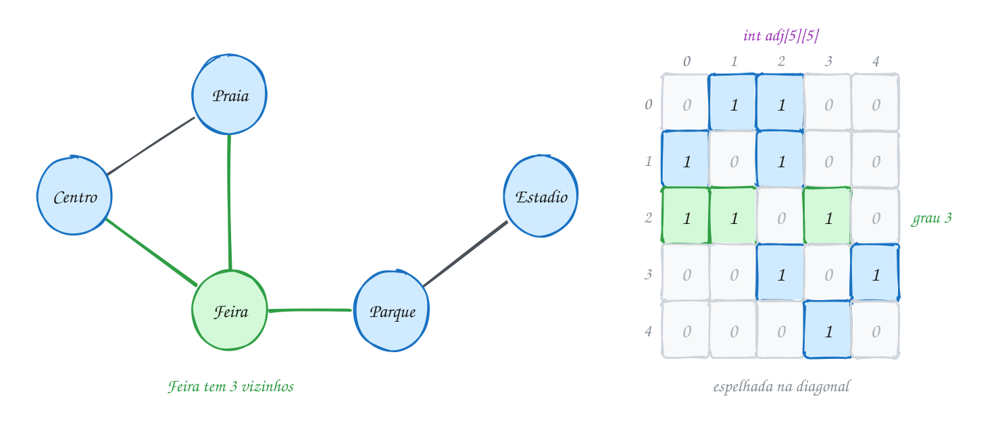
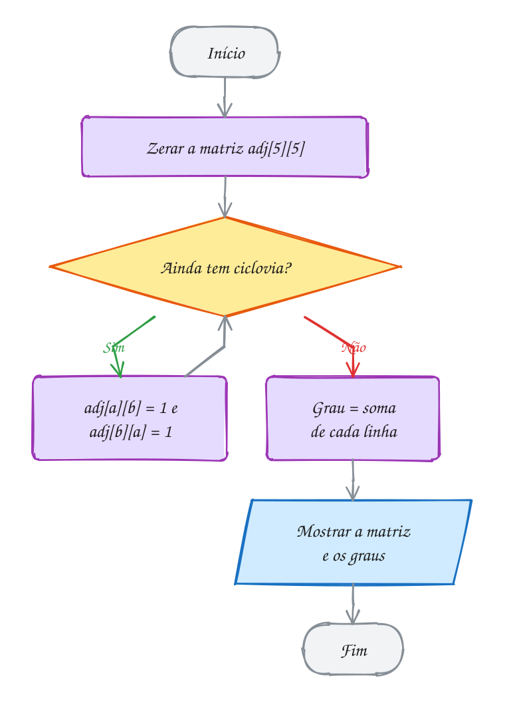
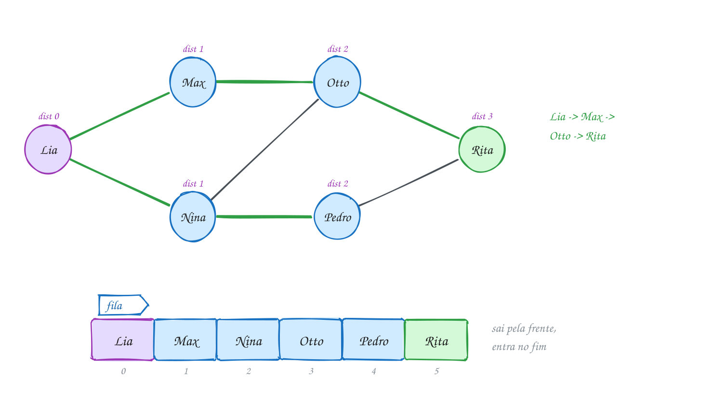
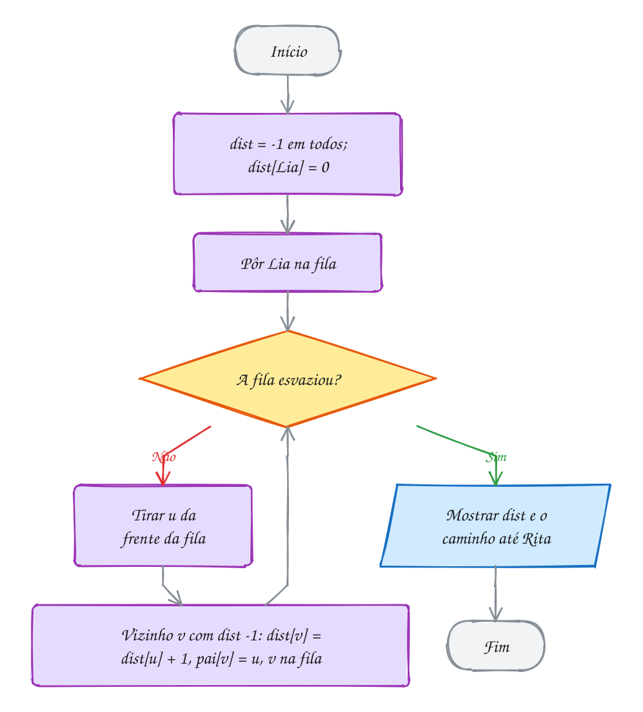
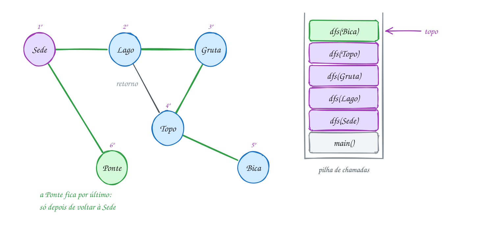
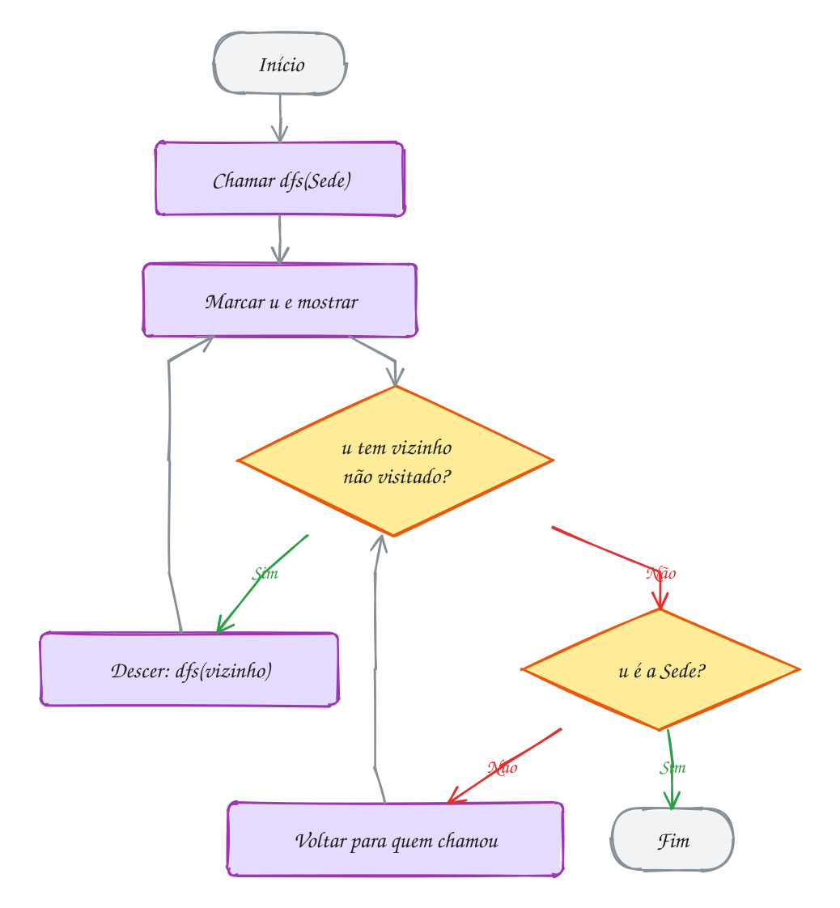
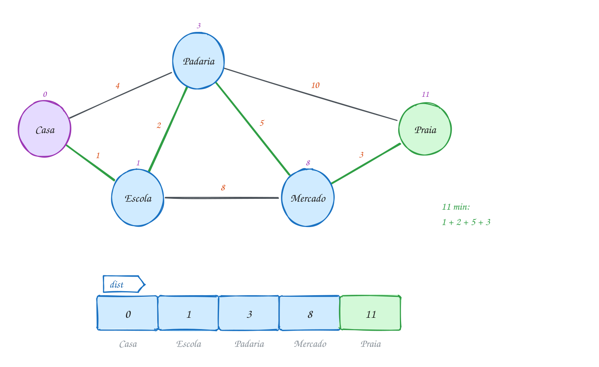
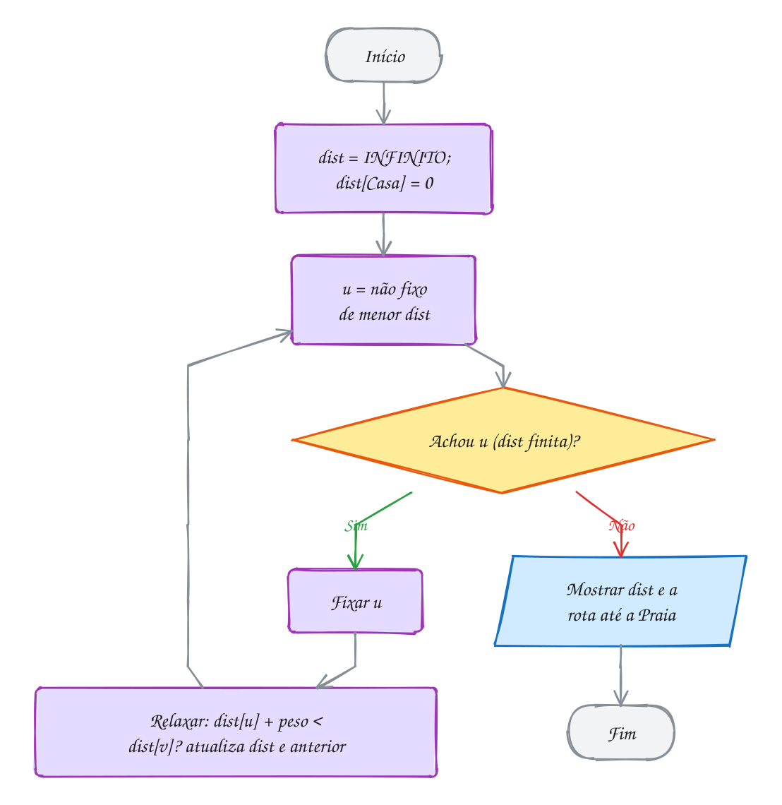
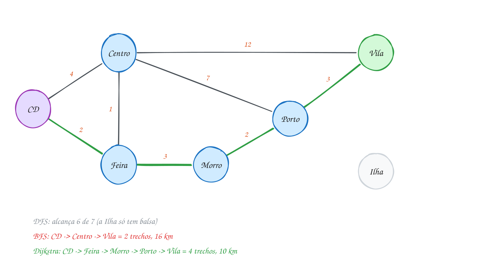
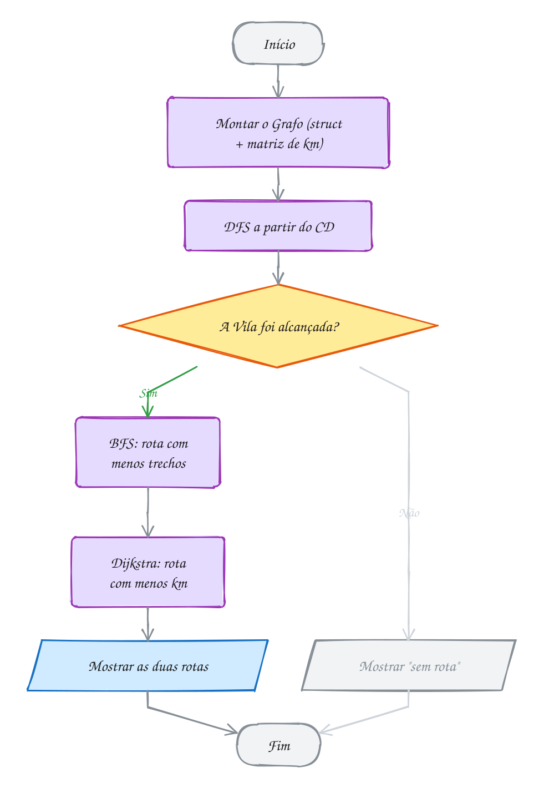

[!IMPORTANT] Mundo 7 · Grafos · Rota do jogo: etapa 21 de 29
Missão: representar grafos e percorrer com BFS, DFS e Dijkstra.
Vem de: Módulo 28 · Estruturas: o que faltava. Segue para: Módulo 23 · Grafos: estrutura e caminhos.
Checkpoints desta fase:
- Ler os assuntos 0109 a 0113 e refazer os exemplos
- Resolver os 4 exercícios de cada assunto, escrevendo o código sozinho
- Fechar a lista prática (P1601 a P1630)
- Enfrentar os desafios do módulo
- Chefão: resolver as questões de prova do módulo sem consultar
Grafo é pontos e ligações, sem regra de forma: ruas, redes sociais, dependências. O módulo cobre representação, BFS, DFS e Dijkstra, quase tudo a mesma busca com fila, pilha ou "menor primeiro". Usa fila e pilha (módulo 12), a lista dos baldes (módulo 15) e o heap (módulo 14).
Usa matrizes (0039), structs (0059 e 0060), malloc e free (0054), lista
(0076), pilha (0082), fila (0085), recursão (0032) e heap (0102).
Vértices são números de 0 a V-1, com os nomes num vetor à parte. Os vizinhos
são examinados em ordem crescente de índice, o que decide empates: outra
numeração muda a saída sem estar errada. O 0109 traz o TAD grafo.h e
grafo.c (lista de adjacência); os demais arquivos usam matriz e são
completos.
| # | Assunto |
|---|---|
| 0109 | Grafos |
| 0110 | BFS: busca em largura |
| 0111 | DFS: busca em profundidade |
| 0112 | Dijkstra: caminho mínimo |
| 0113 | Juntando tudo: a central de entregas |
[!NOTE] Cada assunto é um capítulo: Conceito (a explicação), Exemplos de uso (programas que compilam sozinhos: rode com o comando abaixo de cada um e compare com a saída no fim do código) e Exercícios (cada um é um arquivo em
material/com o esqueleto, as dicas e o espaço para a resposta; resoluções em_respostas/16-grafos/).
Uma lista põe os dados em fila indiana: cada item tem um seguinte. Uma árvore dá a cada item um pai só e não deixa voltar. Muita coisa do mundo não cabe nisso. Pense nas ciclovias de uma cidade: o Centro liga na Praia e na Feira, e a Praia liga na Feira, fechando um triângulo. Ninguém é pai de ninguém, e dá para sair de um ponto e voltar a ele por outro caminho.
Para isso existe o grafo: um conjunto de vértices, que são os pontos, e um conjunto de arestas, que são as ligações entre pares de vértices. O Cormen escreve G = (V, E), com V o conjunto de vértices e E o de arestas, e usa as mesmas letras para as quantidades. É daí que vêm expressões como Θ(V²) e Θ(V + E) que você vai ver no módulo inteiro (CORMEN et al., 2024, cap. 20). Toda árvore é um grafo, mas a recíproca não vale: um grafo pode ter voltas e pedaços soltos, sem ligação com o resto (TENENBAUM; LANGSAM; AUGENSTEIN, 1995, cap. 8).
O grafo traz um vocabulário próprio, e cada palavra tem um sentido preciso. Dois vértices ligados por uma aresta são vizinhos, ou adjacentes. O grau de um vértice é quantas arestas tocam nele: se a Feira tem ciclovia para Centro, Praia e Parque, o grau dela é 3. Um caminho é uma sequência de vértices em que cada um é vizinho do seguinte, como Praia, Feira, Parque. Um ciclo é um caminho que volta ao vértice de onde saiu, como Centro, Praia, Feira, Centro. E um grafo é conexo quando dá para ir de qualquer vértice a qualquer outro (ZIVIANI, 2010, cap. 7).
Os graus guardam uma conta curiosa. Cada aresta toca dois vértices, então ela soma 1 no grau de cada um. Somando os graus de todos os vértices, cada aresta foi contada duas vezes, e o total é o dobro do número de arestas (ZIVIANI, 2010, cap. 7). Cinco ciclovias dão soma de graus 10, sem precisar olhar o desenho.
Às vezes a ligação tem mão única, como uma rua. Aí o grafo é dirigido: cada aresta vira uma seta de um vértice para outro, e cada vértice passa a ter grau de saída (setas que partem dele) e grau de entrada (setas que chegam). Quando a aresta carrega um número, como minutos de viagem ou reais de pedágio, o grafo é ponderado, e esse número é o peso da aresta (CORMEN et al., 2024, cap. 20). As ciclovias valem nos dois sentidos e não têm peso: o grafo delas é não dirigido e sem pesos.
No C, cada vértice vira um número de 0 a V - 1, porque número serve de
índice de vetor. Os nomes ficam num vetor à parte: nomes[2] é "Feira"
(FEOFILOFF, 2009). Falta guardar as arestas, e há duas formas clássicas.
A matriz de adjacência é um int adj[V][V] em que adj[i][j] = 1 quando
existe aresta de i para j. Perguntar se i e j são vizinhos custa O(1),
uma leitura. Listar os vizinhos de i custa O(V), porque é preciso varrer a
linha inteira. Num grafo não dirigido, a matriz sai simétrica. A lista de
adjacência é um vetor de V listas encadeadas, em que a lista de i guarda só
os vizinhos de i. Ela ocupa O(V + E) e lista os vizinhos de i no tempo do
grau dele. A tabela compara as duas:
| Representação | Espaço | "i e j são vizinhos?" | Listar vizinhos de i |
|---|---|---|---|
matriz int adj[V][V] |
O(V²) | O(1) | O(V), a linha inteira |
| lista de adjacência | O(V + E) | o grau de i |
o grau de i |
A escolha depende do tamanho. int adj[5][5] são 25 int seguidos, 100
bytes. Com 100 mil vértices, a matriz teria 10¹⁰ casas, uns 40 GB, quase todas
zero. Grafo pequeno ou denso (com muitas arestas), matriz; grafo grande e
esparso (com poucas arestas perto do máximo), lista.
[!WARNING] Em grafo não dirigido, a aresta entra nos dois sentidos:
adj[a][b] = 1eadj[b][a] = 1. Esquecer um cria um grafo dirigido sem querer, e o erro só aparece quando a busca não acha um caminho que existe.
Cinco ciclovias ligam Centro, Praia, Feira, Parque e Estádio, nos dois sentidos e sem peso. A matriz sai simétrica; a Feira tem três vizinhos, e a linha 2 tem três 1:

As arestas entram como pares, e o grau sai da soma de cada linha. Soma ímpar indicaria um sentido esquecido:
#include <stdio.h>
#define V 5 // número de vértices (pontos da cidade)
int main(void) {
const char *nomes[V] = {"Centro", "Praia", "Feira", "Parque", "Estadio"};
int adj[V][V] = {0}; // adj[i][j] == 1: existe ciclovia entre i e j
// as ciclovias, como pares de vértices
int ciclovias[][2] = {{0, 1}, {0, 2}, {1, 2}, {2, 3}, {3, 4}};
int total = (int)(sizeof ciclovias / sizeof ciclovias[0]);
for (int k = 0; k < total; k++) {
int a = ciclovias[k][0];
int b = ciclovias[k][1];
adj[a][b] = 1;
adj[b][a] = 1; // não dirigido: vale nos dois sentidos
}
printf(" 0 1 2 3 4\n");
int soma_graus = 0;
for (int i = 0; i < V; i++) {
int grau = 0;
printf(" %d ", i);
for (int j = 0; j < V; j++) {
printf(" %d", adj[i][j]);
grau += adj[i][j]; // o grau é a soma da linha
}
printf(" %-8s grau %d\n", nomes[i], grau);
soma_graus += grau;
}
printf("Soma dos graus: %d = 2 x %d ciclovias\n", soma_graus, total);
return 0;
}
// Saída:
// 0 1 2 3 4
// 0 0 1 1 0 0 Centro grau 2
// 1 1 0 1 0 0 Praia grau 2
// 2 1 1 0 1 0 Feira grau 3
// 3 0 0 1 0 1 Parque grau 2
// 4 0 0 0 1 0 Estadio grau 1
// Soma dos graus: 10 = 2 x 5 ciclovias
Primeiro monta-se a estrutura, depois respondem-se as perguntas; todo algoritmo do módulo segue essa ordem. O A217 guarda pesos na matriz e o A218 usa a lista de adjacência como TAD:

Exemplo A217 · Quilômetros na matriz e a vila isolada
#include <stdio.h>
#define V 5
int main(void) {
const char *nomes[V] = {"Sede", "Vila", "Sitio", "Porto", "Ilha"};
int km[V][V] = {0}; // grafo ponderado: km[i][j] é o tamanho da estrada; 0 = sem estrada
int estradas[][3] = {{0, 1, 12}, {0, 3, 30}, {1, 2, 8}, {2, 3, 15}}; // {a, b, km}
int total = (int)(sizeof estradas / sizeof estradas[0]);
for (int k = 0; k < total; k++) {
int a = estradas[k][0], b = estradas[k][1];
km[a][b] = estradas[k][2];
km[b][a] = estradas[k][2]; // mão dupla: o mesmo peso nos dois sentidos
}
// "i e j são vizinhos?" é olhar uma casa só: O(1)
int perguntas[][2] = {{0, 1}, {0, 2}, {3, 2}};
for (int k = 0; k < 3; k++) {
int a = perguntas[k][0], b = perguntas[k][1];
if (km[a][b]) printf("%s-%s: estrada de %d km\n", nomes[a], nomes[b], km[a][b]);
else printf("%s-%s: sem estrada direta\n", nomes[a], nomes[b]);
}
// listar os vizinhos é varrer a linha inteira: O(V)
int isolados = 0;
for (int i = 0; i < V; i++) {
int grau = 0;
printf("%-5s:", nomes[i]);
for (int j = 0; j < V; j++) {
if (km[i][j]) {
printf(" %s(%d)", nomes[j], km[i][j]);
grau++;
}
}
if (grau == 0) {
printf(" ninguém, grau 0"); // vértice isolado: a linha inteira é zero
isolados++;
}
printf("\n");
}
int soma_km = 0;
for (int i = 0; i < V; i++)
for (int j = i + 1; j < V; j++) soma_km += km[i][j]; // acima da diagonal: cada estrada uma vez
printf("Rede: %d estradas, %d km\n", total, soma_km);
if (isolados > 0) printf("Vértices isolados: %d, então o grafo não é conexo\n", isolados);
return 0;
}
// Saída:
// Sede-Vila: estrada de 12 km
// Sede-Sitio: sem estrada direta
// Porto-Sitio: estrada de 15 km
// Sede : Vila(12) Porto(30)
// Vila : Sede(12) Sitio(8)
// Sitio: Vila(8) Porto(15)
// Porto: Sede(30) Sitio(15)
// Ilha : ninguém, grau 0
// Rede: 4 estradas, 65 km
// Vértices isolados: 1, então o grafo não é conexo
gcc ~/LPEDC/material/A217.c ~/LPEDC/material/0109-grafo.c -o ~/LPEDC/material/A217 && ~/LPEDC/material/A217
Exemplo A218 · Quem segue quem: lista de adjacência
#include <stdio.h>
#include "0109-grafo.h"
int main(void) {
const char *nomes[] = {"Ana", "Bia", "Caio", "Duda"};
Grafo *g = grafo_criar(4);
if (g == NULL) return 1;
// aresta dirigida: seguir não é recíproco
grafo_ligar(g, 0, 1); // Ana segue Bia
grafo_ligar(g, 0, 2); // Ana segue Caio
grafo_ligar(g, 1, 2); // Bia segue Caio
grafo_ligar(g, 2, 0); // Caio segue Ana
grafo_ligar(g, 3, 2); // Duda segue Caio
grafo_mostrar(g, nomes);
printf("\n");
for (int v = 0; v < 4; v++)
printf("%-5s segue %d, tem %d seguidor(es)\n", nomes[v],
grafo_grau_saida(g, v), grafo_grau_entrada(g, v));
grafo_liberar(g);
return 0;
}
// Saída:
// Ana -> Caio Bia
// Bia -> Caio
// Caio -> Ana
// Duda -> Caio
//
// Ana segue 2, tem 1 seguidor(es)
// Bia segue 1, tem 1 seguidor(es)
// Caio segue 1, tem 3 seguidor(es)
// Duda segue 1, tem 0 seguidor(es)
gcc ~/LPEDC/material/A218.c ~/LPEDC/material/0109-grafo.c -o ~/LPEDC/material/A218 && ~/LPEDC/material/A218
Exercício E649 · ★☆☆
Uma companhia aérea regional tem voos diretos, de ida e volta, entre quatro capitais: Recife (0), Salvador (1), Fortaleza (2) e Natal (3). Os voos são: Recife-Salvador, Recife-Fortaleza, Recife-Natal e Fortaleza-Natal.
Monte a matriz de adjacência (grafo não dirigido), mostre a matriz e conte quantos voos existem olhando só para a matriz (não vale contar os pares à mão):
Saída esperada:
0 1 2 3
0 0 1 1 1
1 1 0 0 0
2 1 0 0 1
3 1 0 1 0
Voos diretos: 4
gcc ~/LPEDC/material/E649.c ~/LPEDC/material/0109-grafo.c -o ~/LPEDC/material/E649 && ~/LPEDC/material/E649
Exercício E651 · ★★☆
O bairro tem quatro esquinas, A (0), B (1), C (2) e D (3). A prefeitura listou as ruas num vetor de "Rua" (struct com "int de, para"), uma entrada por SENTIDO permitido; {0, 1} é ir de A para B. Os sentidos são {0, 1}, {1, 0}, {1, 2}, {2, 3}, {3, 0}, {0, 2} e {2, 0}. Monte a matriz de adjacência DIRIGIDA a partir do vetor e, para cada par de esquinas ligadas, diga se a rua é de mão dupla ou única (e o sentido). No fim, conte cada tipo.
Saída esperada:
Sentidos cadastrados: 7
A-B: mão dupla
A-C: mão dupla
A-D: mão única (D -> A)
B-C: mão única (B -> C)
C-D: mão única (C -> D)
Mão única: 3, mão dupla: 2
gcc ~/LPEDC/material/E651.c ~/LPEDC/material/0109-grafo.c -o ~/LPEDC/material/E651 && ~/LPEDC/material/E651
Exercício E652 · ★★☆
O grupo de estudos tem Ana (0), Beto (1), Cris (2) e Davi (3). As duplas que estudam juntas são Ana-Beto, Ana-Cris, Beto-Cris e Beto-Davi. Monte a matriz de adjacência do grafo NÃO dirigido e mostre o grau de cada pessoa (soma da linha da matriz) e a soma dos graus.
Saída esperada:
Ana estuda com 2 pessoa(s)
Beto estuda com 3 pessoa(s)
Cris estuda com 2 pessoa(s)
Davi estuda com 1 pessoa(s)
Soma dos graus: 8
gcc ~/LPEDC/material/E652.c ~/LPEDC/material/0109-grafo.c -o ~/LPEDC/material/E652 && ~/LPEDC/material/E652
Exercício E653 · ★★★
Converta a matriz das ciclovias (no esqueleto) para uma LISTA de adjacência com malloc: um vetor de 5 ponteiros, cada um para a lista encadeada dos vizinhos do ponto. Regras: os vizinhos de cada lista saem em ordem crescente de índice; inserir um nó custa O(1) (sem percorrer a lista até o fim); conte os nós alocados; libere tudo no final, sem vazamento.
Saída esperada:
Centro -> Praia Feira
Praia -> Centro Feira
Feira -> Centro Praia Parque
Parque -> Feira Estadio
Estadio -> Parque
Nós alocados: 10
gcc ~/LPEDC/material/E653.c ~/LPEDC/material/0109-grafo.c -o ~/LPEDC/material/E653 && ~/LPEDC/material/E653
Num grafo, uma pergunta aparece o tempo todo: qual é o jeito mais curto de sair de um vértice e chegar a outro? Você quer uma indicação para uma vaga e não conhece a recrutadora, mas conhece pessoas que conhecem pessoas. A corrente mais curta de apresentações é o caminho com menos arestas entre você e ela no grafo de amizades.
Esse número tem nome. A distância de um vértice s até um vértice v é o
menor número de arestas de um caminho que sai de s e chega a v
(FEOFILOFF, 2009, cap. 5). A "conexão de 2º grau" de uma rede profissional é
distância 2. Não confunda com o grau do assunto 0109, que conta as arestas que
tocam um vértice.
Para achar todas as distâncias a partir de s, existe a busca em largura,
ou BFS (do inglês breadth-first search). Pense numa pedra jogada no lago. A
onda 0 é o próprio s. A onda 1 são os vizinhos dele, a uma aresta. A onda 2
são os vizinhos desses que ainda não apareceram, a duas arestas. E assim por
diante, sem pular nenhuma camada (CORMEN et al., 2024, cap. 20). Como a busca
termina uma onda inteira antes de começar a seguinte, a primeira vez que ela
encontra um vértice é sempre pelo caminho mais curto.
A peça que garante a ordem das ondas é a fila do assunto 0085: quem foi
descoberto primeiro sai primeiro. O laço tira um vértice u da frente da fila
e olha cada vizinho v. Se v ainda não foi descoberto, a busca faz
dist[v] = dist[u] + 1, anota pai[v] = u e põe v no fim da fila
(FEOFILOFF, 2009, cap. 5). Os vértices da onda 1 entram todos antes dos da
onda 2, então também saem antes.
O vetor dist[] faz dois papéis. Ele guarda a distância de cada vértice e,
com o valor -1, marca quem ainda não foi descoberto. A marca impede a busca
de andar em círculos: num grafo, dá para chegar ao mesmo vértice por caminhos
diferentes, e sem ela o vértice entraria na fila de novo a cada caminho
(FEOFILOFF, 2009, cap. 5).
O vetor pai[] guarda quem descobriu cada vértice. Os pares (pai[v], v)
formam a árvore da BFS, uma árvore com raiz em s que contém um caminho
mais curto até cada vértice alcançado. Para montar o caminho até um destino,
siga pai[] a partir dele até chegar em -1, o pai da origem. O caminho sai
de trás para a frente, e você o inverte na hora de mostrar (CORMEN et al.,
2024, cap. 20).
O Cormen descreve o mesmo estado com cores. Branco é o vértice ainda
não descoberto, o nosso dist == -1. Cinza é o que já foi descoberto e
está na fila. Preto é o que já saiu da fila e teve todos os vizinhos
olhados. Na notação dele, v.d é o nosso dist[v] e v.π é o pai[v]
(CORMEN et al., 2024, cap. 20).
Quanto custa? Cada vértice entra na fila no máximo uma vez, então um vetor
int fila[V] basta e tirar da frente é só fila[inicio++], em O(1). O resto
do custo é olhar vizinhos. Com matriz, cada vértice varre uma linha de V
casas, e a BFS custa O(V²). Com lista de adjacência, cada aresta é olhada um
número constante de vezes, e o total cai para O(V + E) (ZIVIANI, 2010, cap. 7).
A BFS tem um limite claro: ela acha o caminho com menos arestas, e isso só é o mais curto quando toda aresta custa o mesmo. Se as arestas têm pesos, como minutos de viagem, um caminho com mais arestas pode sair mais barato. Para esse caso entra o algoritmo de Dijkstra, no assunto 0112 (CORMEN et al., 2024, cap. 22).
[!WARNING] Marque o vértice como descoberto ao pôr na fila, não ao tirar. Marcando ao tirar, um vértice com dois vizinhos já vistos entra duas vezes e a fila estoura.
Lia quer uma indicação para a vaga da recrutadora Rita. A onda 1 é Max e Nina; a 2, Otto e Pedro; a 3, Rita. As setas verdes são a árvore da BFS, e o número de cada pessoa é a distância:

O código monta a matriz, roda a BFS a partir de Lia e reconstrói o caminho:
#include <stdio.h>
#define V 6
int main(void) {
const char *nomes[V] = {"Lia", "Max", "Nina", "Otto", "Pedro", "Rita"};
int adj[V][V] = {0};
int conexoes[][2] = {{0, 1}, {0, 2}, {1, 3}, {2, 3}, {2, 4}, {3, 5}, {4, 5}};
for (int k = 0; k < 7; k++) {
adj[conexoes[k][0]][conexoes[k][1]] = 1;
adj[conexoes[k][1]][conexoes[k][0]] = 1;
}
int dist[V], pai[V];
for (int v = 0; v < V; v++) {
dist[v] = -1; // -1: ainda não descoberto
pai[v] = -1;
}
int fila[V]; // cada vértice entra uma vez só: V posições bastam
int inicio = 0, fim = 0;
int origem = 0; // Lia
dist[origem] = 0;
fila[fim++] = origem;
printf("Ordem da visita:\n");
while (inicio < fim) {
int u = fila[inicio++]; // tira da frente
printf(" %-5s distância %d\n", nomes[u], dist[u]);
for (int v = 0; v < V; v++) {
if (adj[u][v] && dist[v] == -1) {
dist[v] = dist[u] + 1; // marca ao ENTRAR na fila
pai[v] = u;
fila[fim++] = v;
}
}
}
// o caminho sai de trás para frente, seguindo pai[]
int destino = 5; // Rita
int caminho[V], n = 0;
for (int v = destino; v != -1; v = pai[v]) caminho[n++] = v;
printf("Caminho até %s:", nomes[destino]);
for (int i = n - 1; i >= 0; i--) printf(" %s%s", nomes[caminho[i]], i > 0 ? " ->" : "");
printf(" (distância %d)\n", dist[destino]);
return 0;
}
// Saída:
// Ordem da visita:
// Lia distância 0
// Max distância 1
// Nina distância 1
// Otto distância 2
// Pedro distância 2
// Rita distância 3
// Caminho até Rita: Lia -> Max -> Otto -> Rita (distância 3)
A busca termina quando a fila esvazia. O A219 agrupa por onda e o A220 roda a BFS numa grade:

Cada linha é uma volta do while. Otto já foi descoberto por Max; quando Nina
o vê, nada acontece:
| Tira | Vizinhos novos | dist anotada | Fila depois |
|---|---|---|---|
| (início) | Lia = 0 | Lia | |
| Lia | Max, Nina | 1, 1 | Max, Nina |
| Max | Otto | 2 | Nina, Otto |
| Nina | Pedro (Otto já tem dist) | 2 | Otto, Pedro |
| Otto | Rita | 3 | Pedro, Rita |
| Pedro | nenhum (Rita já tem dist) | Rita | |
| Rita | nenhum | (vazia) |
Exemplo A219 · As ondas da BFS e quem fica de fora
#include <stdio.h>
#define V 8
int main(void) {
const char *nomes[V] = {"Bruna", "Caio", "Davi", "Eva", "Fred", "Gil", "Hugo", "Iara"};
int adj[V][V] = {0};
// Gil e Hugo só conhecem um ao outro: formam uma parte solta do grafo
int conhece[][2] = {{0, 1}, {0, 2}, {1, 3}, {2, 3}, {3, 4}, {4, 7}, {5, 6}};
int total = (int)(sizeof conhece / sizeof conhece[0]);
for (int k = 0; k < total; k++) {
adj[conhece[k][0]][conhece[k][1]] = 1;
adj[conhece[k][1]][conhece[k][0]] = 1;
}
int dist[V], fila[V], inicio = 0, fim = 0;
for (int v = 0; v < V; v++) dist[v] = -1;
dist[0] = 0; // a fofoca começa com a Bruna
fila[fim++] = 0;
int maior = 0;
while (inicio < fim) {
int u = fila[inicio++];
if (dist[u] > maior) maior = dist[u];
for (int v = 0; v < V; v++)
if (adj[u][v] && dist[v] == -1) {
dist[v] = dist[u] + 1;
fila[fim++] = v;
}
}
// agrupa por distância: cada linha é uma onda
for (int d = 0; d <= maior; d++) {
printf("Onda %d:", d);
for (int v = 0; v < V; v++)
if (dist[v] == d) printf(" %s", nomes[v]);
printf("\n");
}
// quem a fila nunca recebeu continua com -1
printf("Nunca ficam sabendo:");
for (int v = 0; v < V; v++)
if (dist[v] == -1) printf(" %s", nomes[v]);
printf("\nA fila recebeu %d de %d pessoas\n", fim, V);
return 0;
}
// Saída:
// Onda 0: Bruna
// Onda 1: Caio Davi
// Onda 2: Eva
// Onda 3: Fred
// Onda 4: Iara
// Nunca ficam sabendo: Gil Hugo
// A fila recebeu 6 de 8 pessoas
gcc ~/LPEDC/material/A219.c -o ~/LPEDC/material/A219 && ~/LPEDC/material/A219
Exemplo A220 · O robô no galpão: BFS numa grade
#include <stdio.h>
#define L 5
#define C 7
int main(void) {
// # é prateleira; o robô sai de S e vai até E (a expedição)
char mapa[L][C + 1] = {
"S..#...",
".#.#.#.",
".#...#.",
".###.#.",
".....#E",
};
// cada casa é um vértice; os vizinhos são cima, baixo, esquerda e direita
int dl[4] = {-1, 1, 0, 0};
int dc[4] = {0, 0, -1, 1};
int dist[L][C], pai[L * C];
for (int l = 0; l < L; l++)
for (int c = 0; c < C; c++) dist[l][c] = -1;
int fila[L * C]; // a casa (l, c) entra na fila como o número l * C + c
int inicio = 0, fim = 0;
dist[0][0] = 0;
pai[0] = -1;
fila[fim++] = 0;
while (inicio < fim) {
int u = fila[inicio++];
int l = u / C, c = u % C;
for (int k = 0; k < 4; k++) {
int nl = l + dl[k], nc = c + dc[k];
if (nl < 0 || nl >= L || nc < 0 || nc >= C) continue; // fora do galpão
if (mapa[nl][nc] == '#' || dist[nl][nc] != -1) continue;
dist[nl][nc] = dist[l][c] + 1;
pai[nl * C + nc] = u;
fila[fim++] = nl * C + nc;
}
}
printf("Passos até a expedição: %d\n", dist[L - 1][C - 1]);
// marca o caminho com * voltando pelos pais (sem apagar S e E)
for (int u = pai[(L - 1) * C + (C - 1)]; u > 0; u = pai[u]) mapa[u / C][u % C] = '*';
for (int l = 0; l < L; l++) printf("%s\n", mapa[l]);
return 0;
}
// Saída:
// Passos até a expedição: 14
// S**#***
// .#*#*#*
// .#***#*
// .###.#*
// .....#E
gcc ~/LPEDC/material/A220.c -o ~/LPEDC/material/A220 && ~/LPEDC/material/A220
Exercício E655 · ★☆☆
O mapa liga seis bairros por linhas de ônibus diretas (grafo não dirigido): Centro (0), Lapa (1), Moema (2), Penha (3), Saude (4) e Tatuape (5). As linhas são Centro-Lapa, Centro-Moema, Lapa-Penha, Moema-Penha, Moema-Saude, Penha-Tatuape e Saude-Tatuape. Escreva uma BFS a partir da Penha que mostra, numa linha, a ordem da visita com a distância de cada bairro e, depois, uma linha por bairro (em ordem de índice) dizendo quem o descobriu (vetor pai[]).
Saída esperada:
Penha(0) Lapa(1) Moema(1) Tatuape(1) Centro(2) Saude(2)
Centro: descoberto por Lapa
Lapa: descoberto por Penha
Moema: descoberto por Penha
Penha: origem
Saude: descoberto por Moema
Tatuape: descoberto por Penha
Exercício E657 · ★★☆
Mesmo mapa de ônibus do E655 (já está no esqueleto). Você mora na Lapa e precisa ir à Saude pegando o menor número de ônibus. Rode uma BFS a partir da Lapa guardando pai[] e escreva uma função RECURSIVA que imprime o caminho na ordem certa, da origem ao destino:
void imprimir_caminho(const int pai[], int v);
Existe outro caminho com 3 ônibus (Lapa, Penha, Tatuape, Saude). Para ver quem decide o empate, rode a BFS uma segunda vez examinando os vizinhos de trás para frente (v de V-1 até 0) e mostre o caminho que ela acha.
Saída esperada:
Lapa -> Centro -> Moema -> Saude
Ônibus: 3
Ao contrário: Lapa -> Penha -> Tatuape -> Saude
Ônibus: 3
Exercício E658 · ★★☆
Depois do temporal, a companhia de energia sabe quais cabos entre os oito bairros (A a H) continuam inteiros. Bairros ligados, direta ou indiretamente, formam um grupo que pode ser religado de uma vez. Os cabos inteiros são:
A-B, B-C, D-E, F-G, G-H, F-H
Escreva um programa que descobre os grupos (as COMPONENTES CONEXAS do grafo) usando BFS e mostra cada um:
Saída esperada:
Grupo 1: A B C
Grupo 2: D E
Grupo 3: F G H
Total de grupos: 3
Exercício E659 · ★★★
Para cada quarteirão do mapa, ache a distância até o posto de saúde mais próximo com uma BFS que começa com todos os postos na fila. P é posto, # é área sem passagem e . é quarteirão; anda-se para cima, baixo, esquerda e direita. Mapa: "P...#...", ".##.#.#.", "....#.#P", ".#......", "...#..#.". Mostre o mapa com as distâncias (0 nos postos, # onde não passa) e a pior distância.
Saída esperada:
0123#432
1##4#5#1
2345#4#0
3#554321
456#54#2
Pior distância: 6
A BFS do assunto 0110 explora o grafo em ondas, camada por camada. Há outro jeito de visitar todos os vértices alcançáveis, e ele é o jeito de quem explora uma trilha a pé: escolher um caminho e seguir por ele até não dar mais.
Imagine um parque com várias trilhas saindo da Sede. Você pega a do Lago, segue para a Gruta, sobe ao Topo e desce à Bica. Na Bica a trilha acaba. Você volta até a última bifurcação que ainda tem trilha nova e segue por ela. Só quando tudo daquele lado está visto você volta à Sede e pega a trilha da Ponte. Essa é a busca em profundidade, ou DFS (do inglês depth-first search): ir o mais fundo possível e, quando não há nada novo à frente, voltar à última escolha pendente. Esse movimento de voltar se chama backtracking, retrocesso (CORMEN et al., 2024, cap. 20).
A BFS precisava de uma fila para lembrar a ordem das ondas. A DFS precisa de
uma pilha, porque quem foi visitado por último é o primeiro a ser retomado.
O C já tem uma pronta: a pilha de chamadas do assunto 0031. A função recursiva
marca o vértice como visitado e chama a si mesma para cada vizinho ainda não
visitado. Quando dfs(Bica) termina, a execução volta para dfs(Topo), que
continua o laço exatamente de onde parou, porque o frame dela guardou o
vizinho da vez (TENENBAUM; LANGSAM; AUGENSTEIN, 1995, cap. 8). Cada frame
guarda o endereço de retorno, o vértice u e a variável do laço. O vetor
visitado[] fica fora das chamadas, global ou passado por ponteiro, para que
todas enxerguem o mesmo vetor; uma cópia local em cada chamada não marcaria
nada para as outras.
Esse vetor é obrigatório, como era o dist[] com -1 na BFS. Se Lago, Gruta e
Topo formam um ciclo, sem a marca dfs(Topo) chamaria dfs(Lago), que
chamaria dfs(Gruta), que chamaria dfs(Topo) de novo, e a recursão nunca
acabaria (ZIVIANI, 2010, cap. 7).
As arestas por onde a DFS desce formam a árvore da DFS. As outras arestas também contam uma história. Uma aresta que leva a um vértice que ainda está na pilha de chamadas, como Topo–Lago, é uma aresta de retorno: ela aponta para um ancestral na árvore. Num grafo não dirigido, achar uma aresta de retorno é achar um ciclo (CORMEN et al., 2024, cap. 20).
O Cormen acrescenta um relógio à busca. Um contador global sobe a cada
evento, e cada vértice ganha dois carimbos: o tempo de descoberta v.d,
quando a busca chega nele, e o tempo de término v.f, quando todos os
vizinhos dele foram resolvidos. As cores acompanham: branco é o não
descoberto, cinza o que está na pilha e preto o terminado. Contando de
1 a partir da Sede, a Sede fica com 1/12 e a Bica com 5/6. O procedimento
DFS(G) do livro não para numa origem só: ele recomeça de todo vértice
ainda branco, e o resultado é uma floresta, várias árvores (CORMEN et al.,
2024, cap. 20).
Num grafo dirigido, as arestas fora da árvore se dividem em três tipos. A
de retorno aponta para um ancestral cinza, e a existência dela prova que há
ciclo. A de avanço aponta para um descendente que já ficou preto. A de
cruzamento aponta para um vértice preto de outro ramo. Os tempos de
término têm um uso famoso: num grafo dirigido sem ciclos, listar os vértices
em ordem decrescente de v.f dá a ordenação topológica, uma ordem em que
toda seta vai da esquerda para a direita, como as tarefas de uma obra em que
cada uma só começa depois das que ela depende (CORMEN et al., 2024, cap. 20).
Com lista de adjacência, a DFS custa O(V + E), como a BFS. Ela diz quem é alcançável e encontra ciclos, mas não dá o caminho mais curto: a trilha que ela segue até um vértice pode ser longa só porque foi a primeira tentada. Para distância, use a BFS (FEOFILOFF, 2009, cap. 5).
[!WARNING] Recursão funda estoura a pilha (8 MB é o comum no Linux): um labirinto de 1000 × 1000 casas pode empilhar um milhão de chamadas. Em grafos grandes, use pilha explícita com
malloc, como no A222.
Da Sede do parque saem trilhas para o Lago e a Ponte. A DFS desce Lago, Gruta, Topo e Bica, volta e só no fim pega a Ponte. Os números são a ordem da visita, as arestas verdes são a árvore e à direita fica a pilha na Bica:

O código imprime cada vértice com recuo proporcional à profundidade.
visitado[] e adj[] são globais, e todas as chamadas veem o mesmo vetor:
#include <stdbool.h>
#include <stdio.h>
#define V 6
const char *nomes[V] = {"Sede", "Lago", "Gruta", "Ponte", "Topo", "Bica"};
int adj[V][V];
bool visitado[V];
void dfs(int u, int nivel) {
visitado[u] = true;
printf("%*s%s\n", 2 * nivel, "", nomes[u]); // recuo = profundidade
for (int v = 0; v < V; v++)
if (adj[u][v] && !visitado[v]) dfs(v, nivel + 1); // desce antes de olhar o próximo
}
int main(void) {
int trilhas[][2] = {{0, 1}, {0, 3}, {1, 2}, {1, 4}, {2, 4}, {4, 5}};
for (int k = 0; k < 6; k++) {
adj[trilhas[k][0]][trilhas[k][1]] = 1;
adj[trilhas[k][1]][trilhas[k][0]] = 1;
}
dfs(0, 0); // começa na Sede
return 0;
}
// Saída:
// Sede
// Lago
// Gruta
// Topo
// Bica
// Ponte
Cada chamada só pergunta "tenho vizinho novo?": se tem, desce; se não, volta. A BFS daria Sede, Lago, Ponte, Gruta, Topo, Bica. O A221 conta ciclos e o A222 usa pilha explícita:

Exemplo A221 · Cabos do escritório: arestas de árvore e de retorno
#include <stdio.h>
#define V 6
const char *nomes[V] = {"Servidor", "Recepcao", "RH", "Financeiro", "Diretoria", "Copa"};
int adj[V][V];
int ordem[V]; // em que momento cada sala foi descoberta; 0 = ainda não
int relogio = 0;
int de_arvore = 0, de_retorno = 0;
void dfs(int u, int pai) {
ordem[u] = ++relogio;
for (int v = 0; v < V; v++) {
if (!adj[u][v]) continue;
if (ordem[v] == 0) { // sala nova: a DFS desce por este cabo
printf("desce %s -> %s\n", nomes[u], nomes[v]);
de_arvore++;
dfs(v, u);
} else if (v != pai && ordem[v] < ordem[u]) {
// v já está na pilha, acima de u: este cabo fecha um ciclo
printf("retorno %s -> %s (ciclo)\n", nomes[u], nomes[v]);
de_retorno++;
}
// v == pai: é o cabo por onde u chegou; não conta como ciclo
}
}
int main(void) {
int cabos[][2] = {{0, 1}, {0, 2}, {1, 2}, {2, 3}, {3, 4}, {0, 4}, {4, 5}};
int total = (int)(sizeof cabos / sizeof cabos[0]);
for (int k = 0; k < total; k++) {
adj[cabos[k][0]][cabos[k][1]] = 1;
adj[cabos[k][1]][cabos[k][0]] = 1;
}
dfs(0, -1); // o Servidor não tem pai
printf("Cabos: %d = %d de árvore + %d de retorno\n", total, de_arvore, de_retorno);
printf("Para não ter ciclo nenhum, bastariam %d cabos (V - 1)\n", V - 1);
return 0;
}
// Saída:
// desce Servidor -> Recepcao
// desce Recepcao -> RH
// retorno RH -> Servidor (ciclo)
// desce RH -> Financeiro
// desce Financeiro -> Diretoria
// retorno Diretoria -> Servidor (ciclo)
// desce Diretoria -> Copa
// Cabos: 7 = 5 de árvore + 2 de retorno
// Para não ter ciclo nenhum, bastariam 5 cabos (V - 1)
gcc ~/LPEDC/material/A221.c -o ~/LPEDC/material/A221 && ~/LPEDC/material/A221
Exemplo A222 · A pilha que a recursão escondia
#include <stdbool.h>
#include <stdio.h>
#define V 6
#define ARESTAS 6
int main(void) {
const char *nomes[V] = {"Sede", "Lago", "Gruta", "Ponte", "Topo", "Bica"};
int adj[V][V] = {0};
int trilhas[ARESTAS][2] = {{0, 1}, {0, 3}, {1, 2}, {1, 4}, {2, 4}, {4, 5}};
for (int k = 0; k < ARESTAS; k++) {
adj[trilhas[k][0]][trilhas[k][1]] = 1;
adj[trilhas[k][1]][trilhas[k][0]] = 1;
}
bool visitado[V] = {false};
int pilha[2 * ARESTAS + 1]; // cada aresta empilha no máximo 2 vezes, + a origem
int topo = 0;
pilha[topo++] = 0; // Sede
while (topo > 0) {
int u = pilha[--topo]; // tira do topo
if (visitado[u]) {
printf("tira %-5s (já visitado)\n", nomes[u]);
continue;
}
visitado[u] = true;
// empilha de trás para frente: o vizinho de menor índice fica no topo
for (int v = V - 1; v >= 0; v--)
if (adj[u][v] && !visitado[v]) pilha[topo++] = v;
printf("tira %-5s pilha:", nomes[u]);
for (int i = 0; i < topo; i++) printf(" %s", nomes[pilha[i]]);
printf("\n");
}
return 0;
}
// Saída:
// tira Sede pilha: Ponte Lago
// tira Lago pilha: Ponte Topo Gruta
// tira Gruta pilha: Ponte Topo Topo
// tira Topo pilha: Ponte Topo Bica
// tira Bica pilha: Ponte Topo
// tira Topo (já visitado)
// tira Ponte pilha:
gcc ~/LPEDC/material/A222.c -o ~/LPEDC/material/A222 && ~/LPEDC/material/A222
Exercício E661 · ★☆☆
O shopping tem seis áreas, Hall (0), Cinema (1), Praça (2), Loja (3), Banco (4) e Saída (5), ligadas por corredores (grafo não dirigido): Hall-Praça, Hall-Banco, Cinema-Praça, Praça-Loja, Loja-Banco e Banco-Saída. Escreva uma DFS recursiva a partir do Hall (vizinhos em ordem de índice) que imprime cada área com o número da visita (1, 2, 3...) e 2 espaços de recuo por nível de profundidade. No fim, mostre qual área ficou mais funda e em que nível.
Saída esperada:
1 Hall
2 Praça
3 Cinema
4 Loja
5 Banco
6 Saída
Mais fundo: Saída (nível 4)
Exercício E663 · ★★☆
Uma foto de satélite virou uma grade: # é terra e ~ é água. Terras vizinhas
na horizontal ou na vertical formam uma ilha. Com DFS recursiva, que pinta
a ilha inteira ao achar terra ainda não visitada, mostre o tamanho de cada
ilha, o total de ilhas e o tamanho da maior. Grade: "##~~~#", "#~~~##",
"#~~~~", "~####", "###".
Saída esperada:
Ilha 1: 3 casa(s)
Ilha 2: 3 casa(s)
Ilha 3: 5 casa(s)
Ilha 4: 3 casa(s)
Total: 4 ilhas, a maior tem 5 casas
Exercício E664 · ★★☆
Disciplinas: Lógica 0, C 1, Ponteiros 2, Estruturas 3, Grafos 4, Discreta 5. Pré-requisitos (A -> B: A vem antes de B): Lógica -> C, C -> Ponteiros, Ponteiros -> Estruturas, Estruturas -> Grafos, Discreta -> Grafos, Lógica -> Discreta. Escreva a ordenação topológica com DFS (vértices e sucessores em ordem de índice): anote cada vértice ao TERMINAR dfs(u). Mostre a ordem de término e, lida de trás para frente, a ordem para cursar.
Saída esperada:
Ordem de término: Grafos Estruturas Ponteiros C Discreta Lógica
Ordem para cursar: Lógica Discreta C Ponteiros Estruturas Grafos
Exercício E665 · ★★★
Os pacotes de um projeto são app 0, api 1, auth 2, db 3, log 4 e utils 5, e uma seta A -> B quer dizer "A importa B":
app -> api, app -> auth, api -> db, api -> log, auth -> db,
db -> utils, utils -> log, log -> auth
Escreva uma DFS com TRÊS cores (branco, cinza, preto) que acha o ciclo e o mostra, reconstruído com pai[]: uma seta para um vértice CINZA fecha um ciclo. Rode com o grafo acima e sem a seta log -> auth.
Saída esperada:
Com log -> auth: ciclo db -> utils -> log -> auth -> db
Sem log -> auth: sem ciclo
A BFS acha o caminho com menos arestas. No trânsito, isso não basta. Um aplicativo de rotas sabe que ir de Casa até a Padaria pela rua direta leva 4 minutos, mas que ir de Casa até a Escola leva 1 e da Escola até a Padaria leva 2. A rua direta parece óbvia, e passar pela Escola dá 3 minutos.
O grafo agora é ponderado: cada aresta carrega um peso, que pode ser minutos, quilômetros ou reais. O custo de um caminho é a soma dos pesos das arestas dele, e o caminho mínimo é o de menor soma, não o de menos arestas (CORMEN et al., 2024, cap. 22). A BFS erra aqui sem avisar, porque ela para no primeiro caminho que chega, e o primeiro a chegar é o de menos ruas.
O algoritmo de Dijkstra resolve esse problema. A partir de uma origem, ele
acha o caminho mínimo até todos os outros vértices, desde que nenhum peso
seja negativo (DIJKSTRA, 1959). Ele trabalha com três vetores. dist[v]
guarda o melhor custo conhecido até agora da origem até v: começa em 0 na
origem e em INFINITO no resto, que quer dizer "ainda não sei chegar".
fixo[v] diz se esse custo já é definitivo. anterior[v] guarda de onde se
chega em v no melhor caminho, com o mesmo papel do pai[] da BFS (ZIVIANI,
2010, cap. 7).
A operação central se chama relaxar uma aresta. Você tem dist[u] e uma
aresta de u para v. Se dist[u] + peso[u][v] < dist[v], passar por u
melhora o caminho até v, e você atualiza dist[v] com a soma e anota
anterior[v] = u. Se não melhora, nada muda. No Cormen, esse teste é o
procedimento RELAX(u, v, w), os vetores são os campos v.d e v.π e os
vértices fixos formam o conjunto S (CORMEN et al., 2024, cap. 22). No exemplo
da padaria, dist[Padaria] começa em 4 pela rua direta; quando a Escola é
fixada com 1, relaxar a aresta Escola–Padaria dá 1 + 2 = 3, que é menor, e o
4 vira 3.
O algoritmo repete um passo só. Entre os vértices não fixos, pega o de menor
dist, marca como fixo e relaxa todas as arestas que saem dele. Ele é
guloso: em cada passo, faz a escolha que parece melhor naquele momento e
nunca a desfaz. Fixar o menor é seguro por um motivo simples. Qualquer outro
caminho até esse vértice teria de sair dos fixos por algum vértice não fixo,
que já tem dist maior ou igual. Sem pesos negativos, andar mais só soma, e o
outro caminho não fica mais barato (CORMEN et al., 2024, cap. 22).
O argumento depende de "andar mais só soma". Com uma aresta de peso negativo, um caminho mais longo pode ficar mais barato depois de um vértice já fixado, e o Dijkstra devolve uma resposta errada sem dar nenhum sinal. Para esse caso existe o algoritmo de Bellman-Ford, no assunto 0154, que relaxa todas as arestas V - 1 vezes (CORMEN et al., 2024, cap. 22).
O custo depende de como você acha o menor dist. Com matriz de adjacência,
cada um dos V passos varre os V vértices para achar o menor não fixo e mais V
para relaxar a linha: O(V²). Com lista de adjacência e um heap de mínimo
(assunto 0102), que entrega o menor em O(log V), o total cai para
O((V + E) log V) (CORMEN et al., 2024, cap. 22).
[!WARNING]
INT_MAX + 3estoura: comportamento indefinido emintcom sinal, que na prática vira negativo e "ganha" no<. Por isso o código só escolheucomdist[u] != INFINITO. Um INFINITO folgado (1000000000) também evita o estouro (CPPREFERENCE, s.d.).
Rumo à praia, o Waze sabe que Casa até Padaria leva 4 minutos, mas Casa,
Escola, Padaria leva 3. A BFS acharia Casa, Padaria, Praia (14 minutos). Os
números das arestas são minutos, o de cada lugar é a dist final e as arestas
verdes formam a rota de 11 minutos:

O código usa matriz de pesos (0 é "sem rua direta") e reconstrói a rota pelo
anterior[]:
#include <limits.h>
#include <stdbool.h>
#include <stdio.h>
#define V 5
#define INFINITO INT_MAX // "ainda não sei chegar"
int main(void) {
const char *nomes[V] = {"Casa", "Escola", "Padaria", "Mercado", "Praia"};
int peso[V][V] = {0}; // minutos; 0 = sem rua direta
int ruas[][3] = {{0, 2, 4}, {0, 1, 1}, {1, 2, 2}, {2, 3, 5}, {1, 3, 8}, {3, 4, 3}, {2, 4, 10}};
for (int k = 0; k < 7; k++) {
peso[ruas[k][0]][ruas[k][1]] = ruas[k][2];
peso[ruas[k][1]][ruas[k][0]] = ruas[k][2]; // mão dupla
}
int dist[V], anterior[V];
bool fixo[V]; // distância definitiva?
for (int v = 0; v < V; v++) {
dist[v] = INFINITO;
anterior[v] = -1;
fixo[v] = false;
}
dist[0] = 0; // saindo de Casa
for (int passo = 0; passo < V; passo++) {
// escolhe o vértice não fixo com a menor distância conhecida
int u = -1;
for (int v = 0; v < V; v++)
if (!fixo[v] && dist[v] != INFINITO && (u == -1 || dist[v] < dist[u])) u = v;
if (u == -1) break; // o que sobrou é inalcançável
fixo[u] = true;
// relaxa: passar por u encurta o caminho até v?
for (int v = 0; v < V; v++) {
if (peso[u][v] && !fixo[v] && dist[u] + peso[u][v] < dist[v]) {
dist[v] = dist[u] + peso[u][v];
anterior[v] = u;
}
}
}
for (int v = 0; v < V; v++) printf("%s: %d min\n", nomes[v], dist[v]);
int rota[V], n = 0;
for (int v = 4; v != -1; v = anterior[v]) rota[n++] = v;
printf("Rota até a Praia:");
for (int i = n - 1; i >= 0; i--) printf(" %s%s", nomes[rota[i]], i > 0 ? " ->" : "");
printf("\n");
return 0;
}
// Saída:
// Casa: 0 min
// Escola: 1 min
// Padaria: 3 min
// Mercado: 8 min
// Praia: 11 min
// Rota até a Praia: Casa -> Escola -> Padaria -> Mercado -> Praia
É a estrutura da BFS, com a fila trocada por "menor dist não fixo". O laço
acaba com todos fixos ou quando o menor que sobrou é INFINITO:

Cada linha fixa um vértice e relaxa os vizinhos: a Padaria cai de 4 para 3 e o Mercado de 9 para 8:
| Fixa | Casa | Escola | Padaria | Mercado | Praia |
|---|---|---|---|---|---|
| (início) | 0 | ∞ | ∞ | ∞ | ∞ |
| Casa (0) | 0 | 1 | 4 | ∞ | ∞ |
| Escola (1) | 1 | 3 | 9 | ∞ | |
| Padaria (3) | 3 | 8 | 13 | ||
| Mercado (8) | 8 | 11 | |||
| Praia (11) | 11 |
O exemplo A223 para ao fixar o destino. O A224 usa grafo dirigido (ônibus, em reais) e trata uma cidade que nenhuma linha alcança.
Exemplo A223 · O entregador que para quando chega
#include <limits.h>
#include <stdbool.h>
#include <stdio.h>
#define V 7
#define INFINITO INT_MAX
int main(void) {
const char *nomes[V] = {"Loja", "Banco", "Igreja", "Museu", "Teatro", "Estadio", "Aeroporto"};
int minutos[V][V] = {0}; // de bicicleta; 0 = sem rua direta
int ruas[][3] = {{0, 1, 2}, {0, 2, 5}, {1, 2, 1}, {1, 3, 7}, {2, 3, 3},
{3, 4, 4}, {4, 5, 6}, {2, 6, 20}, {5, 6, 2}};
int total = (int)(sizeof ruas / sizeof ruas[0]);
for (int k = 0; k < total; k++) {
minutos[ruas[k][0]][ruas[k][1]] = ruas[k][2];
minutos[ruas[k][1]][ruas[k][0]] = ruas[k][2];
}
int origem = 0, destino = 3; // da Loja até o Museu
int dist[V], anterior[V];
bool fixo[V] = {false};
for (int v = 0; v < V; v++) {
dist[v] = INFINITO;
anterior[v] = -1;
}
dist[origem] = 0;
int fixados = 0;
for (int passo = 0; passo < V; passo++) {
int u = -1;
for (int v = 0; v < V; v++)
if (!fixo[v] && dist[v] != INFINITO && (u == -1 || dist[v] < dist[u])) u = v;
if (u == -1) break;
fixo[u] = true;
fixados++;
printf("fixa %-6s %2d min\n", nomes[u], dist[u]);
// fixado é definitivo: nada que venha depois melhora o Museu
if (u == destino) break;
for (int v = 0; v < V; v++)
if (minutos[u][v] && !fixo[v] && dist[u] + minutos[u][v] < dist[v]) {
dist[v] = dist[u] + minutos[u][v];
anterior[v] = u;
}
}
int rota[V], n = 0;
for (int v = destino; v != -1; v = anterior[v]) rota[n++] = v;
printf("Rota:");
for (int i = n - 1; i >= 0; i--) printf(" %s%s", nomes[rota[i]], i > 0 ? " ->" : "");
printf(" (%d min)\n", dist[destino]);
// rodando até o fim, o Aeroporto cairia para 18 (Museu, Teatro, Estadio)
printf("Fixou %d de %d lugares; o Aeroporto ficou com dist ", fixados, V);
if (dist[6] == INFINITO) printf("INFINITO\n");
else printf("%d, que não é a resposta final\n", dist[6]);
return 0;
}
// Saída:
// fixa Loja 0 min
// fixa Banco 2 min
// fixa Igreja 3 min
// fixa Museu 6 min
// Rota: Loja -> Banco -> Igreja -> Museu (6 min)
// Fixou 4 de 7 lugares; o Aeroporto ficou com dist 23, que não é a resposta final
gcc ~/LPEDC/material/A223.c -o ~/LPEDC/material/A223 && ~/LPEDC/material/A223
Exemplo A224 · Passagens de ônibus e a cidade sem rota
#include <limits.h>
#include <stdbool.h>
#include <stdio.h>
#define V 6
#define INFINITO INT_MAX
const char *nomes[V] = {"Recife", "Caruaru", "Garanhuns", "Petrolina", "Olinda", "Noronha"};
int preco[V][V]; // R$ da passagem; 0 = sem linha direta (grafo dirigido)
void dijkstra(int origem, int dist[], int anterior[]) {
bool fixo[V] = {false};
for (int v = 0; v < V; v++) {
dist[v] = INFINITO;
anterior[v] = -1;
}
dist[origem] = 0;
for (int passo = 0; passo < V; passo++) {
int u = -1;
for (int v = 0; v < V; v++)
if (!fixo[v] && dist[v] != INFINITO && (u == -1 || dist[v] < dist[u])) u = v;
if (u == -1) break; // sem mais ninguém alcançável: para antes de somar com INFINITO
fixo[u] = true;
for (int v = 0; v < V; v++)
if (preco[u][v] && dist[u] + preco[u][v] < dist[v]) {
dist[v] = dist[u] + preco[u][v];
anterior[v] = u;
}
}
}
void imprimir_rota(const int anterior[], int v) {
if (anterior[v] != -1) {
imprimir_rota(anterior, anterior[v]);
printf(" -> ");
}
printf("%s", nomes[v]);
}
int main(void) {
int linhas[][3] = {{0, 1, 40}, {0, 4, 5}, {4, 1, 38}, {1, 2, 35},
{0, 2, 80}, {2, 3, 120}, {1, 3, 170}};
for (int k = 0; k < 7; k++) preco[linhas[k][0]][linhas[k][1]] = linhas[k][2];
int dist[V], anterior[V];
dijkstra(0, dist, anterior);
for (int v = 1; v < V; v++) {
if (dist[v] == INFINITO) {
printf("%-9s sem rota de ônibus\n", nomes[v]);
continue;
}
printf("%-9s R$ %3d ", nomes[v], dist[v]);
imprimir_rota(anterior, v);
printf("\n");
}
return 0;
}
// Saída:
// Caruaru R$ 40 Recife -> Caruaru
// Garanhuns R$ 75 Recife -> Caruaru -> Garanhuns
// Petrolina R$ 195 Recife -> Caruaru -> Garanhuns -> Petrolina
// Olinda R$ 5 Recife -> Olinda
// Noronha sem rota de ônibus
gcc ~/LPEDC/material/A224.c -o ~/LPEDC/material/A224 && ~/LPEDC/material/A224
Exercício E667 · ★☆☆
Um centro de distribuição entrega em quatro bairros (CD 0, A 1, B 2, C 3 e D 4). As ruas são de mão dupla, com pesos em km: CD-A 7, CD-B 2, B-A 3, B-C 8, A-C 1, A-D 6 e C-D 2. Escreva o Dijkstra a partir do CD, com matriz de pesos, dist[] e anterior[], e imprima o teste de mesa: depois de relaxar os vizinhos de cada vértice fixado, mostre quem foi fixado e o vetor dist inteiro (- para INFINITO). No fim, mostre o caminho até D e a distância.
Saída esperada:
Fixa CD: dist = 0 7 2 - -
Fixa B: dist = 0 5 2 10 -
Fixa A: dist = 0 5 2 6 11
Fixa C: dist = 0 5 2 6 8
Fixa D: dist = 0 5 2 6 8
Caminho até D: CD -> B -> A -> C -> D (8 km)
Exercício E669 · ★★☆
Um motoboy sai do restaurante (R) para entregar em cinco clientes. As ruas são de mão dupla e os pesos são km:
R-Ana 2, R-Beto 6, Ana-Beto 3, Ana-Caio 7, Beto-Caio 2, Beto-Dani 9,
Caio-Dani 3, Caio-Eva 8, Dani-Eva 1
Escreva o programa completo: Dijkstra a partir do R guardando anterior[], e mostre, para cada cliente, a distância e a rota (com uma função recursiva). No fim, diga qual cliente fica mais longe.
Saída esperada:
Ana: 2 km R -> Ana
Beto: 5 km R -> Ana -> Beto
Caio: 7 km R -> Ana -> Beto -> Caio
Dani: 10 km R -> Ana -> Beto -> Caio -> Dani
Eva: 11 km R -> Ana -> Beto -> Caio -> Dani -> Eva
Mais longe: Eva (11 km)
Exercício E670 · ★★☆
Ruas de mão única, em minutos, entre Hospital 0, Norte 1, Sul 2, Leste 3 e Oeste 4: Norte -> Hospital 9, Norte -> Leste 2, Leste -> Hospital 4, Leste -> Oeste 1, Sul -> Oeste 3, Sul -> Norte 1, Oeste -> Hospital 5, Hospital -> Sul 1. Com UMA só execução de Dijkstra, a partir do Hospital no grafo transposto (setas invertidas), mostre quanto a ambulância leva de cada bairro até o Hospital.
Saída esperada:
Norte: 6 min
Sul: 7 min
Leste: 4 min
Oeste: 5 min
Exercício E671 · ★★★
Escreva o voo mais barato saindo de São Paulo (SP 0, Rio 1, BH 2, Manaus 3 e Belém 4). Os voos são de ida e volta, em reais: SP-Rio 200, SP-BH 250, Rio-BH 180 e Manaus-Belém 300. Nenhum voo liga Manaus e Belém ao resto do mapa. Use Dijkstra com INFINITO = INT_MAX e nunca some com o INFINITO (a conta estoura o int). Mostre o preço até cada cidade ou "sem voo".
Saída esperada:
Rio: R$ 200
BH: R$ 250
Manaus: sem voo
Belém: sem voo
Uma transportadora com um centro de distribuição e vários pontos de entrega faz perguntas diferentes sobre o mesmo mapa. Dá para chegar em todos os pontos? Qual rota tem menos trechos? Qual roda menos quilômetros? Como ligar todos os pontos com o mínimo de estrada? Cada pergunta pede um algoritmo do módulo, e a graça deste assunto é ver que eles são parentes.
Olhe para os três primeiros lado a lado. DFS, BFS e Dijkstra marcam quem já
foi visto, anotam em pai[] de onde cada vértice veio e repetem um laço que
tira um vértice e descobre os vizinhos dele. O que muda é a ordem em que os
vértices saem: na DFS, sai o mais recente, como numa pilha; na BFS, o mais
antigo, como numa fila; no Dijkstra, o de menor dist (CORMEN et al., 2024,
caps. 20 e 22). Trocar a estrutura que guarda os pendentes troca o algoritmo.
Antes de calcular rota, convém perguntar se o destino é alcançável. A DFS responde isso: tudo o que ela visita a partir do centro de distribuição dá para alcançar, e o que fica de fora, como uma ilha que só tem balsa, não tem rota nenhuma a calcular (TENENBAUM; LANGSAM; AUGENSTEIN, 1995, cap. 8).
Para a rota em si, a pergunta decisiva é "menor em quê?". Se todo trecho custa o mesmo, o caminho mínimo é o de menos trechos, e a BFS resolve em O(V + E). Se os trechos têm quilometragens diferentes, a BFS ainda devolve um caminho, só que o errado, e não avisa (FEOFILOFF, 2009, cap. 5). Aí é Dijkstra.
A última pergunta é de outra natureza. A transportadora não quer ir de um ponto a outro; quer escolher estradas que deixem todos os pontos ligados gastando o mínimo. Esse conjunto de arestas se chama árvore geradora mínima: geradora porque alcança todos os vértices, árvore porque não tem ciclo (um ciclo teria uma estrada sobrando) e mínima porque a soma dos pesos é a menor possível (CORMEN et al., 2024, cap. 21).
O algoritmo de Prim constrói essa árvore e é quase o Dijkstra. Ele também
fixa, a cada passo, o vértice não fixo de menor valor e atualiza os vizinhos.
A diferença está numa linha. O Dijkstra compara o custo do caminho inteiro,
dist[u] + custo < dist[v]. O Prim compara só o custo da aresta que liga v
à árvore, custo < chave[v], porque o que importa é o preço de pendurar v
na árvore, não a distância até a origem (CORMEN et al., 2024, cap. 21). A
tabela resume quem responde o quê:
| Pergunta | Algoritmo | Estrutura auxiliar |
|---|---|---|
| Quem dá para alcançar? Quantos grupos? Tem ciclo? | DFS | pilha (a recursão) |
| Menor caminho em número de arestas | BFS | fila |
| Menor caminho em soma de pesos (pesos >= 0) | Dijkstra | vetor dist (ou heap) |
| Ligar todos com o menor custo total | Prim | vetor chave |
No código, o mapa vira um tipo. A struct Grafo junta o número de vértices,
os nomes e a matriz de quilômetros, e cada algoritmo é uma função que recebe
const Grafo *. O ponteiro passa 8 bytes em vez de copiar os 328 da struct, e
o const promete que nenhuma função altera o mapa (KERNIGHAN; RITCHIE, 1989).
Com 1000 vértices a matriz teria 4 MB, e a struct teria de ir para o heap com
malloc.
Para preencher a struct, o exemplo usa um inicializador designado, recurso
do C99: {.n = 7, .nomes = {...}} cita pelo nome só os campos que interessam,
e todo campo não citado, como km, começa zerado (ISO/IEC, 2018).
[!WARNING] Na matriz de pesos,
0quer dizer "sem aresta", o que só funciona se nenhum peso real for zero. Se um trecho pode custar R$ 0, use outra marca, como-1.
Uma transportadora tem um centro de distribuição (CD) e seis lugares a atender. A Ilha só tem balsa, e a DFS a deixa de fora. A BFS acha a rota de 2 trechos pelo Centro (16 km); o Dijkstra, a de 4 trechos, em verde (10 km):

bfs e dijkstra preenchem o mesmo pai[], e uma só mostrar_rota serve aos
dois:
#include <limits.h>
#include <stdbool.h>
#include <stdio.h>
#define MAX 8
#define INFINITO INT_MAX
typedef struct {
int n;
const char *nomes[MAX];
int km[MAX][MAX]; // 0 = sem estrada
} Grafo;
void ligar(Grafo *g, int a, int b, int km) {
g->km[a][b] = km;
g->km[b][a] = km;
}
// DFS: marca tudo que dá para alcançar a partir de u
void dfs(const Grafo *g, int u, bool visitado[]) {
visitado[u] = true;
for (int v = 0; v < g->n; v++)
if (g->km[u][v] && !visitado[v]) dfs(g, v, visitado);
}
// BFS: menor número de trechos
void bfs(const Grafo *g, int origem, int pai[]) {
int fila[MAX], inicio = 0, fim = 0;
bool visto[MAX] = {false};
for (int v = 0; v < g->n; v++) pai[v] = -1;
visto[origem] = true;
fila[fim++] = origem;
while (inicio < fim) {
int u = fila[inicio++];
for (int v = 0; v < g->n; v++)
if (g->km[u][v] && !visto[v]) {
visto[v] = true;
pai[v] = u;
fila[fim++] = v;
}
}
}
// Dijkstra: menor soma de km
void dijkstra(const Grafo *g, int origem, int pai[]) {
int dist[MAX];
bool fixo[MAX] = {false};
for (int v = 0; v < g->n; v++) {
dist[v] = INFINITO;
pai[v] = -1;
}
dist[origem] = 0;
for (int passo = 0; passo < g->n; passo++) {
int u = -1;
for (int v = 0; v < g->n; v++)
if (!fixo[v] && dist[v] != INFINITO && (u == -1 || dist[v] < dist[u])) u = v;
if (u == -1) break;
fixo[u] = true;
for (int v = 0; v < g->n; v++)
if (g->km[u][v] && !fixo[v] && dist[u] + g->km[u][v] < dist[v]) {
dist[v] = dist[u] + g->km[u][v];
pai[v] = u;
}
}
}
// mostra o caminho guardado em pai[] e soma trechos e km
void mostrar_rota(const Grafo *g, const int pai[], int destino) {
int rota[MAX], n = 0, total = 0;
for (int v = destino; v != -1; v = pai[v]) rota[n++] = v;
for (int i = n - 1; i >= 0; i--) {
printf("%s%s", g->nomes[rota[i]], i > 0 ? " -> " : "");
if (i > 0) total += g->km[rota[i]][rota[i - 1]];
}
printf(" (%d trechos, %d km)\n", n - 1, total);
}
int main(void) {
Grafo g = {.n = 7, .nomes = {"CD", "Centro", "Feira", "Porto", "Morro", "Vila", "Ilha"}};
ligar(&g, 0, 1, 4);
ligar(&g, 0, 2, 2);
ligar(&g, 2, 1, 1);
ligar(&g, 1, 3, 7);
ligar(&g, 2, 4, 3);
ligar(&g, 4, 3, 2);
ligar(&g, 3, 5, 3);
ligar(&g, 1, 5, 12);
// a Ilha (6) só tem balsa: nenhuma estrada
int cd = 0, vila = 5;
bool visitado[MAX] = {false};
dfs(&g, cd, visitado);
int alcancaveis = 0;
for (int v = 0; v < g.n; v++) alcancaveis += visitado[v];
printf("Alcançáveis a partir do CD: %d de %d (fora:", alcancaveis, g.n);
for (int v = 0; v < g.n; v++)
if (!visitado[v]) printf(" %s", g.nomes[v]);
printf(")\n");
if (!visitado[vila]) {
printf("Sem rota até %s\n", g.nomes[vila]);
return 0;
}
int pai[MAX];
bfs(&g, cd, pai);
printf("Menos trechos: ");
mostrar_rota(&g, pai, vila);
dijkstra(&g, cd, pai);
printf("Menos km: ");
mostrar_rota(&g, pai, vila);
return 0;
}
// Saída:
// Alcançáveis a partir do CD: 6 de 7 (fora: Ilha)
// Menos trechos: CD -> Centro -> Vila (2 trechos, 16 km)
// Menos km: CD -> Feira -> Morro -> Porto -> Vila (4 trechos, 10 km)
A DFS vem primeiro, como porteiro: com a Vila fora da rede, não há rota. O A225 conta as partes soltas de um mapa e o A226 liga cinco cidades com fibra óptica pelo Prim:

Exemplo A225 · Mudanças: BFS ou Dijkstra, destino por destino
#include <limits.h>
#include <stdbool.h>
#include <stdio.h>
#define MAX 8
#define INFINITO INT_MAX
typedef struct {
int n;
const char *nomes[MAX];
int km[MAX][MAX]; // 0 = sem estrada
} Grafo;
void ligar(Grafo *g, int a, int b, int km) {
g->km[a][b] = km;
g->km[b][a] = km;
}
// DFS: pinta com o número do grupo tudo que se alcança a partir de u
void dfs(const Grafo *g, int u, int grupo[], int cor) {
grupo[u] = cor;
for (int v = 0; v < g->n; v++)
if (g->km[u][v] && grupo[v] == 0) dfs(g, v, grupo, cor);
}
// BFS: pai[] da rota com menos trechos
void bfs(const Grafo *g, int origem, int pai[]) {
int fila[MAX], inicio = 0, fim = 0;
bool visto[MAX] = {false};
for (int v = 0; v < g->n; v++) pai[v] = -1;
visto[origem] = true;
fila[fim++] = origem;
while (inicio < fim) {
int u = fila[inicio++];
for (int v = 0; v < g->n; v++)
if (g->km[u][v] && !visto[v]) {
visto[v] = true;
pai[v] = u;
fila[fim++] = v;
}
}
}
// Dijkstra: pai[] da rota com menos km
void dijkstra(const Grafo *g, int origem, int pai[]) {
int dist[MAX];
bool fixo[MAX] = {false};
for (int v = 0; v < g->n; v++) {
dist[v] = INFINITO;
pai[v] = -1;
}
dist[origem] = 0;
for (int passo = 0; passo < g->n; passo++) {
int u = -1;
for (int v = 0; v < g->n; v++)
if (!fixo[v] && dist[v] != INFINITO && (u == -1 || dist[v] < dist[u])) u = v;
if (u == -1) break;
fixo[u] = true;
for (int v = 0; v < g->n; v++)
if (g->km[u][v] && !fixo[v] && dist[u] + g->km[u][v] < dist[v]) {
dist[v] = dist[u] + g->km[u][v];
pai[v] = u;
}
}
}
// soma os km da rota guardada em pai[] e conta os trechos
int km_da_rota(const Grafo *g, const int pai[], int destino, int *trechos) {
int total = 0;
*trechos = 0;
for (int v = destino; pai[v] != -1; v = pai[v]) {
total += g->km[pai[v]][v];
(*trechos)++;
}
return total;
}
int main(void) {
Grafo g = {.n = 8, .nomes = {"Base", "Alto", "Baixo", "Rio", "Serra", "Mar", "Lagoa", "Dunas"}};
ligar(&g, 0, 1, 5);
ligar(&g, 0, 2, 2);
ligar(&g, 2, 1, 2);
ligar(&g, 1, 4, 9);
ligar(&g, 2, 3, 3);
ligar(&g, 3, 4, 3);
ligar(&g, 4, 5, 2);
ligar(&g, 3, 5, 8);
ligar(&g, 6, 7, 4); // Lagoa e Dunas: estrada só entre elas
int grupo[MAX] = {0}, grupos = 0;
for (int v = 0; v < g.n; v++)
if (grupo[v] == 0) dfs(&g, v, grupo, ++grupos);
printf("Grupos ligados por estrada: %d\n\n", grupos);
int base = 0, pai_bfs[MAX], pai_dij[MAX];
bfs(&g, base, pai_bfs);
dijkstra(&g, base, pai_dij);
printf("Destino %-19s%s\n", "BFS", "Dijkstra");
for (int v = 1; v < g.n; v++) {
if (grupo[v] != grupo[base]) { // a DFS já respondeu: nem adianta procurar
printf("%-8s sem estrada a partir da Base\n", g.nomes[v]);
continue;
}
int t_bfs, t_dij;
int km_bfs = km_da_rota(&g, pai_bfs, v, &t_bfs);
int km_dij = km_da_rota(&g, pai_dij, v, &t_dij);
printf("%-8s %d trecho(s) %2d km %d trecho(s) %2d km%s\n", g.nomes[v], t_bfs, km_bfs, t_dij,
km_dij, km_bfs > km_dij ? " <- a BFS roda mais" : "");
}
return 0;
}
// Saída:
// Grupos ligados por estrada: 2
//
// Destino BFS Dijkstra
// Alto 1 trecho(s) 5 km 2 trecho(s) 4 km <- a BFS roda mais
// Baixo 1 trecho(s) 2 km 1 trecho(s) 2 km
// Rio 2 trecho(s) 5 km 2 trecho(s) 5 km
// Serra 2 trecho(s) 14 km 3 trecho(s) 8 km <- a BFS roda mais
// Mar 3 trecho(s) 16 km 4 trecho(s) 10 km <- a BFS roda mais
// Lagoa sem estrada a partir da Base
// Dunas sem estrada a partir da Base
gcc ~/LPEDC/material/A225.c -o ~/LPEDC/material/A225 && ~/LPEDC/material/A225
Exemplo A226 · Fibra óptica pelo menor custo: o algoritmo de Prim
#include <limits.h>
#include <stdbool.h>
#include <stdio.h>
#define V 5
#define INFINITO INT_MAX
int main(void) {
const char *nomes[V] = {"Natal", "Mossoró", "Caicó", "Currais Novos", "Pau dos Ferros"};
int custo[V][V] = {0}; // R$ mil para passar o cabo; 0 = trecho inviável
int trechos[][3] = {{0, 1, 28}, {0, 2, 25}, {0, 3, 18}, {1, 2, 20},
{1, 4, 16}, {2, 3, 9}, {2, 4, 22}, {3, 1, 24}};
for (int k = 0; k < 8; k++) {
custo[trechos[k][0]][trechos[k][1]] = trechos[k][2];
custo[trechos[k][1]][trechos[k][0]] = trechos[k][2];
}
// chave[v]: o cabo MAIS BARATO que liga v a alguma cidade já na rede
int chave[V], pai[V];
bool na_rede[V] = {false};
for (int v = 0; v < V; v++) {
chave[v] = INFINITO;
pai[v] = -1;
}
chave[0] = 0; // a rede começa em Natal
int total = 0;
for (int passo = 0; passo < V; passo++) {
int u = -1;
for (int v = 0; v < V; v++)
if (!na_rede[v] && chave[v] != INFINITO && (u == -1 || chave[v] < chave[u])) u = v;
if (u == -1) break;
na_rede[u] = true;
total += chave[u];
if (pai[u] != -1) printf("%s - %s: R$ %d mil\n", nomes[pai[u]], nomes[u], chave[u]);
// a diferença para o Dijkstra: compara só o cabo, não a soma desde Natal
for (int v = 0; v < V; v++)
if (custo[u][v] && !na_rede[v] && custo[u][v] < chave[v]) {
chave[v] = custo[u][v];
pai[v] = u;
}
}
printf("Custo total: R$ %d mil\n", total);
return 0;
}
// Saída:
// Natal - Currais Novos: R$ 18 mil
// Currais Novos - Caicó: R$ 9 mil
// Caicó - Mossoró: R$ 20 mil
// Mossoró - Pau dos Ferros: R$ 16 mil
// Custo total: R$ 63 mil
gcc ~/LPEDC/material/A226.c -o ~/LPEDC/material/A226 && ~/LPEDC/material/A226
Exercício E674 · ★☆☆
Grafo ponderado não dirigido de cinco vértices, A a E: A-B 1, A-C 4, A-E 9, B-D 2, C-D 1 e D-E 3. Escreva um programa que, a partir de A (vizinhos em ordem de índice), mostra a ordem da BFS, a da DFS e as distâncias do Dijkstra. Guarde um pai[] na BFS e outro no Dijkstra e mostre as duas rotas até E, com a soma dos pesos de cada uma.
Saída esperada:
BFS: A B C E D
DFS: A B D C E
Dijkstra: A=0 B=1 C=4 D=3 E=6
Menos arestas até E: A -> E (9)
Menos peso até E: A -> B -> D -> E (6)
Exercício E675 · ★★☆
A prefeitura vai construir um pronto-socorro num de seis lugares (CD, Centro, Feira, Porto, Morro e Vila). O critério: a menor "pior distância" até qualquer outro lugar. As estradas, em km (mão dupla):
CD-Centro 4, CD-Feira 2, Feira-Centro 1, Centro-Porto 7, Feira-Morro 3,
Morro-Porto 2, Porto-Vila 3, Centro-Vila 12
Para cada lugar, rode Dijkstra a partir dele, ache a maior distância (e até onde) e escolha o melhor.
Saída esperada:
CD pior caso: 10 km (até Vila)
Centro pior caso: 9 km (até Vila)
Feira pior caso: 8 km (até Vila)
Porto pior caso: 7 km (até CD)
Morro pior caso: 5 km (até CD)
Vila pior caso: 10 km (até CD)
Melhor lugar para o hospital: Morro (ninguém a mais de 5 km)
Exercício E676 · ★★☆
No futebol da firma, rivais não podem ficar no mesmo time. Divida Ana 0, Bruno 1, Carla 2, Diego 3, Elisa 4 e Fábio 5 em dois times com uma BFS (vizinhos por índice) que pinta a origem com 0 e cada rival descoberto com a cor oposta. Rivalidades: Ana-Bruno, Ana-Diego, Carla-Bruno, Carla-Fábio, Elisa-Diego. Mostre os times; depois acrescente Ana-Carla e mostre o primeiro conflito achado: "Impossível: X e Y ficariam no mesmo time".
Saída esperada:
Time 1: Ana Carla Elisa
Time 2: Bruno Diego Fábio
Impossível: Bruno e Carla ficariam no mesmo time
Exercício E677 · ★★★
Escada de palavras: transformar uma palavra em outra trocando UMA letra por vez, e cada passo tem de ser uma palavra da lista (GATO, GATA, MATA...). Ache a escada mais curta. A lista já está no esqueleto. Ninguém monta a matriz: duas palavras são vizinhas quando têm o mesmo tamanho e diferem em exatamente uma posição. Rode uma BFS e reconstrua a escada com pai[]. Teste GATO -> BOLA, CASA -> ROSA, MOTO -> CAMA e GATO -> PEIXE.
Saída esperada:
GATO -> BOLA em 5 passo(s): GATO GATA MATA MALA MOLA BOLA
CASA -> ROSA em 10 passo(s): CASA CAMA LAMA LATA MATA MALA MOLA BOLA BOTA ROTA ROSA
MOTO -> CAMA em 5 passo(s): MOTO MATO MATA LATA LAMA CAMA
GATO -> PEIXE: impossível
30 exercícios que misturam os assuntos do módulo, no ritmo da prova. Arquivos P1601.c a P1630.c, em material/; resoluções em _respostas/16-grafos/lista/.
Exercício P1601 · ★☆☆ · Grau das paradas e número de linhas
A matriz do esqueleto liga seis bairros de Manaus por linhas de ônibus diretas, de ida e volta (grafo NÃO dirigido): adj[i][j] == 1 quer dizer que uma linha liga i e j. Escreva do zero um programa que mostre:
Saída esperada:
Centro grau 3
Adrianopolis grau 3
Cidade Nova grau 2
Ponta Negra grau 1
Compensa grau 2
Aleixo grau 3
Soma dos graus: 14
Linhas (arestas): 7
Maior grau: Centro (3)
Ponta de linha: Ponta Negra
Resposta esperada: soma dos graus 14, 7 linhas, maior grau Centro (3), e a única ponta de linha é Ponta Negra.
Exercício P1602 · ★☆☆ · Voos diretos: graus de entrada e de saída
Uma companhia aérea tem voos diretos entre seis capitais. Voo é de mão única: o voo Manaus -> Belém não garante o voo Belém -> Manaus (grafo DIRIGIDO). O esqueleto traz o vetor voos[], um par {origem, destino} por voo.
Escreva o programa que:
Saída esperada:
Manaus saída 3 entrada 2
Belem saída 1 entrada 1
Brasilia saída 3 entrada 3
Sao Paulo saída 2 entrada 2
Recife saída 1 entrada 2
Boa Vista saída 1 entrada 1
Voos: 11 | soma das saídas 11 | soma das entradas 11
Hub: Brasilia (3 chegadas)
Ida e volta: Manaus <-> Brasilia
Ida e volta: Manaus <-> Boa Vista
Ida e volta: Brasilia <-> Sao Paulo
Ida e volta: Sao Paulo <-> Recife
Pares com ida e volta: 4
Resposta esperada: 11 voos nas duas somas, hub Brasilia (3 chegadas) e 4 pares com ida e volta.
Exercício P1603 · ★☆☆ · Da lista para a matriz: o cadastro torto
A rede de amigos de um grupo de corrida está guardada em LISTA de adjacência (listas encadeadas com malloc). Amizade é recíproca, então toda ligação deveria aparecer nas duas listas. Só que alguém cadastrou uma amizade em um sentido só.
Complete as duas funções:
void lista_para_matriz(No *lista[], int m[V][V]);
int confere_simetria(int m[V][V]);
A primeira zera m e marca m[u][v] = 1 para cada nó v da lista de u. A segunda mostra cada par i < j com m[i][j] != m[j][i] e devolve quantos achou. O main já monta as listas, chama as duas funções, mostra a matriz e libera tudo.
Saída esperada:
A B C D E
Ana 0 1 1 0 0
Bruno 1 0 1 0 1
Carla 1 1 0 1 0
Davi 0 0 1 0 1
Eva 0 1 0 0 0
Torto: Davi e Eva
Pares tortos: 1
Resposta esperada: a matriz acima e um único par torto, Davi e Eva.
Exercício P1604 · ★☆☆ · O grupo de estudos é completo?
Cinco colegas que vão fazer a prova do mestrado montaram um grupo de estudos. A matriz do esqueleto diz quem já estudou junto com quem (não dirigido). O grupo só fica "completo" quando TODO par de pessoas já estudou junto: é o grafo completo K5, com 5·4/2 = 10 arestas.
Escreva:
int arestas(int m[V][V]);
bool completo(int m[V][V]);
e um main que mostre quantas arestas há, quantas o K5 teria, os pares que ainda faltam e, depois de marcar esses pares na matriz (as sessões que faltam), se o grupo ficou completo.
Saída esperada:
Arestas: 7 de 10
completo: não
Falta: Iara-Luana
Falta: Joao-Moacir
Falta: Kaue-Luana
Depois das sessões: 10 arestas
completo: sim
Resposta esperada: 7 arestas de 10, faltam Iara-Luana, Joao-Moacir e Kaue-Luana; depois, "completo: sim".
Exercício P1605 · ★☆☆ · O complemento: quem ainda precisa ser apresentado
No coffee break de um congresso em Manaus, a organização quer apresentar quem ainda não se conhece. A matriz conhece[][] (não dirigida) diz quem já se conhece. O grafo das apresentações que faltam é o COMPLEMENTO: tem uma aresta i-j (com i != j) exatamente quando conhece[i][j] == 0.
Escreva void complemento(int g[V][V], int c[V][V]) e um main que mostre, para cada pessoa, quem ela ainda precisa conhecer, o número de arestas dos dois grafos e a soma, que tem de dar o número de arestas do grafo completo.
Saída esperada:
Raimundo : Ubiratan Vania
Socorro : Ubiratan Vania Wesley
Tiago : Vania Wesley
Ubiratan : Raimundo Socorro Wesley
Vania : Raimundo Socorro Tiago
Wesley : Socorro Tiago Ubiratan
conhece: 7 | complemento: 8 | total: 15 = 6·5/2
Resposta esperada: 7 arestas em conhece, 8 no complemento, 15 no total.
Exercício P1606 · ★☆☆ · Quem me segue: o grafo transposto
Numa rede social, "u segue v" é uma seta u -> v (grafo dirigido). O esqueleto guarda, em lista de adjacência, QUEM CADA PERFIL SEGUE. Para mostrar os SEGUIDORES de cada perfil, você precisa do grafo TRANSPOSTO: o mesmo grafo com todas as setas invertidas (cada u -> v vira v -> u).
Complete No **transposta(No *lista[]), que cria (com malloc) as listas do transposto, e mostre os seguidores de cada perfil em ordem alfabética. Libere as duas listas no fim.
Saída esperada:
Ana segue: Beto Cris
Beto segue: Cris
Cris segue: Ana
Dani segue: Ana Cris
Enzo segue: Dani
Seguidores de Ana: Cris Dani
Seguidores de Beto: Ana
Seguidores de Cris: Ana Beto Dani
Seguidores de Dani: Enzo
Seguidores de Enzo: ninguém
Resposta esperada: Ana tem 2 seguidores; Enzo, nenhum.
Exercício P1607 · ★☆☆ · BFS a partir da rodoviária: d e π
Você chegou à rodoviária de Manaus, no bairro Flores, e quer saber quantas baldeações de ônibus separam Flores de cada bairro. As linhas diretas (mão dupla) estão na matriz do esqueleto.
Complete void bfs(int s, int d[], int pi[]) no estilo do Cormen: d[v] é a distância (em arestas) de s até v, ou -1 se v não foi alcançado, e pi[v] é o predecessor de v na árvore da BFS, ou -1 (NIL). Examine os vizinhos em ordem de índice. O main já mostra a tabela. Acrescente na bfs um printf com a ordem em que os bairros SAEM da fila.
Saída esperada:
Saem da fila: Flores Parque Dez Aleixo Centro Cachoeirinha Coroado Educandos Japiim
bairro d pi
Flores 0 NIL
Parque Dez 1 Flores
Aleixo 1 Flores
Centro 2 Parque Dez
Educandos 3 Centro
Cachoeirinha 2 Parque Dez
Japiim 3 Cachoeirinha
Coroado 2 Aleixo
Resposta esperada: Os mais longe são Educandos e Japiim (d = 3), e Educandos tem π = Centro.
Exercício P1608 · ★☆☆ · Conserte a BFS das trilhas do bosque
Conserte o programa. Ele deveria mostrar a quantos trechos de trilha cada ponto do bosque fica da Entrada (grafo não dirigido) e por onde se chega, mas o colega deixou DOIS erros de propósito. Não há erro de memória: o programa roda até o fim, só que as distâncias e os predecessores saem errados.
Saída que aparece:
Entrada d=0 pi=NIL
Lago d=1 pi=Lago
Viveiro d=1 pi=Viveiro
Mirante d=2 pi=Mirante
Orquidario d=2 pi=Orquidario
Torre d=3 pi=Torre
Cafe d=3 pi=Cafe
Saída esperada:
Entrada d=0 pi=NIL
Lago d=1 pi=Entrada
Viveiro d=1 pi=Entrada
Mirante d=2 pi=Lago
Orquidario d=2 pi=Viveiro
Torre d=3 pi=Mirante
Cafe d=2 pi=Lago
Resposta esperada: a segunda saída acima; a Torre fica a 3 trechos, pelo Mirante.
Exercício P1609 · ★☆☆ · DFS com relógio: os tempos d e f
No parque, as trilhas são de sentido único (grafo DIRIGIDO):
Portao -> Lago, Portao -> Viveiro, Lago -> Mirante, Mirante -> Portao,
Viveiro -> Mirante, Viveiro -> Cascata, Quiosque -> Cascata,
Quiosque -> Viveiro
Complete a DFS no estilo do Cormen. Um relógio global começa em 0 e avança a cada descoberta e a cada término: d[u] é o tempo em que u fica CINZA e f[u] o tempo em que fica PRETO. O laço do main tenta os vértices em ordem de índice e começa uma árvore nova em cada vértice ainda branco. Mostre também a ordem em que os vértices terminam.
Saída esperada:
Portao 1/10
Lago 2/ 5
Mirante 3/ 4
Viveiro 6/ 9
Cascata 7/ 8
Quiosque 11/12
Terminam: Mirante Lago Cascata Viveiro Portao Quiosque
Resposta esperada: Portao 1/10, Lago 2/5, Mirante 3/4, Viveiro 6/9, Cascata 7/8, Quiosque 11/12.
Exercício P1610 · ★☆☆ · Comunidades do rio: quantas lanchas faltam
Nove comunidades ribeirinhas do Rio Negro (0 a 8) são ligadas por linhas de lancha de ida e volta:
0-1, 1-2, 0-2, 3-4, 5-6, 6-7, 5-7
A comunidade 8 está isolada. Um grupo de comunidades que se alcançam, direta ou indiretamente, é um COMPONENTE CONEXO. Para ligar k componentes num só bastam k - 1 linhas novas (uma ligando cada grupo ao seguinte).
Escreva do zero um programa que rotule os componentes com uma DFS (comp[v] = número do componente), mostre os membros de cada componente e quantas linhas novas são necessárias.
Saída esperada:
Componente 0: 0 1 2
Componente 1: 3 4
Componente 2: 5 6 7
Componente 3: 8
Componentes: 4
Linhas novas necessárias: 3
Resposta esperada: 4 componentes, logo 3 linhas novas.
Exercício P1611 · ★★☆ · Menos conexões até Porto Alegre
Você sai de Manaus e quer chegar a outra capital com o MENOR número de voos. A companhia voa nos dois sentidos nos trechos da matriz do esqueleto (não dirigido). Oiapoque está no cadastro, mas a companhia não voa para lá.
Rode uma BFS a partir de Manaus guardando pi[] e escreva, SEM recursão:
int caminho(const int pi[], int s, int t, int rota[]);
Ela devolve o número de voos de s até t e preenche rota[] com as cidades na ordem da viagem, de s até t; se t não foi alcançado, devolve -1. Mostre a rota para Porto Alegre, Fortaleza e Oiapoque.
Saída esperada:
Porto Alegre: Manaus -> Brasilia -> Recife -> Rio -> Porto Alegre (4 voos, d = 4)
Fortaleza: Manaus -> Belem -> Fortaleza (2 voos, d = 2)
Oiapoque: sem rota
Resposta esperada: Porto Alegre em 4 voos (Manaus, Brasilia, Recife, Rio, Porto Alegre), Fortaleza em 2 e Oiapoque sem rota.
Exercício P1612 · ★★☆ · Os links do site: os quatro tipos de aresta
O site de uma loja de açaí tem sete páginas, e cada link é uma seta (grafo DIRIGIDO), guardada na matriz do esqueleto. Rode uma DFS (laço principal e vizinhos em ordem de índice) e classifique cada link no momento em que ele é examinado, de u para v:
Mostre cada link com o tipo, na ordem em que a DFS os examina, e a contagem de cada tipo.
Saída esperada:
Home -> Blog árvore
Blog -> Post árvore
Post -> Home retorno
Post -> Contato árvore
Home -> Loja árvore
Loja -> Contato cruzamento
Loja -> Carrinho árvore
Carrinho -> Loja retorno
Home -> Post avanço
Ajuda -> Home cruzamento
Ajuda -> Contato cruzamento
árvore 5, retorno 2, avanço 1, cruzamento 3
Resposta esperada: 5 de árvore, 2 de retorno, 1 de avanço e 3 de cruzamento (11 links).
Exercício P1613 · ★★☆ · Dois turnos de prova e a aresta que estraga
A coordenação quer marcar as provas finais em DOIS turnos, manhã e tarde. Duas disciplinas com alunos em comum (uma aresta do grafo não dirigido) não podem cair no mesmo turno. Isso só é possível se o grafo for BIPARTIDO.
Escreva bool bipartido(int adj[V][V], int turno[]), que colore o grafo com BFS (turno 0 = manhã, 1 = tarde), começando uma BFS nova em cada vértice ainda sem turno (o grafo pode ter vários componentes). Ao achar uma aresta com as duas pontas no mesmo turno, mostre essa aresta e devolva false.
Teste no grafo do esqueleto e, depois, no mesmo grafo com a aresta extra Calculo-Fisica.
Saída esperada:
Bipartido:
Calculo manhã
Algoritmos tarde
Fisica manhã
Discreta tarde
Ingles manhã
Estatistica tarde
Com Calculo-Fisica:
Conflito: Algoritmos-Fisica no mesmo turno
Não é bipartido
Resposta esperada: o primeiro grafo é bipartido; o segundo não, e a aresta que estraga aparece ao examinar Algoritmos-Fisica.
Exercício P1614 · ★★☆ · O anel na rede de água: ache e mostre o ciclo
A rede de canos de água de um bairro liga sete pontos (não dirigido). Para a manutenção, interessa saber se existe um ANEL (ciclo) e por onde ele passa: num anel, a água chega a um ponto por dois caminhos.
Escreva uma DFS com pai[] que, ao achar uma aresta u-v com v já visitado e v != pai[u] (aresta de retorno), mostre o ciclo inteiro subindo por pai[] de u até v. Pare na primeira que achar. Rode na rede do esqueleto e, depois, sem o cano Valvula-Caixa.
Saída esperada:
Ciclo: Posto -> Escola -> Caixa -> Valvula -> Posto
Sem Valvula-Caixa: sem ciclo
Resposta esperada: Posto -> Escola -> Caixa -> Valvula -> Posto (a DFS desce Reservatorio, Valvula, Caixa, Escola, Posto, e Posto enxerga Valvula) e, sem o cano, "sem ciclo".
Exercício P1615 · ★★☆ · Dijkstra do centro de distribuição, com a rota
Um centro de distribuição (CD) no Distrito Industrial de Manaus entrega em seis bairros. As ruas são de mão dupla, com a distância em km na matriz peso[][] do esqueleto (0 = não há rua direta).
Escreva o Dijkstra O(V²), sem heap: a cada rodada, escolha o vértice NÃO FECHADO de menor dist, feche-o e relaxe as arestas que saem dele, guardando pi[]. Depois mostre, para cada bairro, a distância e a rota a partir do CD (use uma função recursiva para imprimir a rota na ordem certa).
Saída esperada:
Japiim 4 km: CD -> Japiim
Coroado 6 km: CD -> Japiim -> Coroado
Aleixo 9 km: CD -> Japiim -> Coroado -> Aleixo
Centro 13 km: CD -> Japiim -> Centro
Flores 15 km: CD -> Japiim -> Coroado -> Aleixo -> Flores
Ponta Negra 25 km: CD -> Japiim -> Coroado -> Aleixo -> Flores -> Ponta Negra
Resposta esperada: Ponta Negra a 25 km, por CD -> Japiim -> Coroado -> Aleixo -> Flores -> Ponta Negra; o Centro sai mais perto pelo Japiim (13 km) do que pelo Aleixo (14 km).
Exercício P1616 · ★★☆ · Conserte o Dijkstra das balsas
Conserte o programa. Ele calcula o menor tempo de viagem de balsa, em horas, saindo de Manaus para cidades do Amazonas (trechos de ida e volta, peso 0 = não há balsa direta). O código tem DOIS erros de propósito: um na escolha do próximo vértice e outro no relaxamento. Ele termina e não tem erro de memória, mas a resposta está errada:
Saída que aparece:
Manacapuru 3 h
Itacoatiara 6 h
Parintins 18 h
Coari 30 h
Tefe 0 h
Depois do conserto:
Saída esperada:
Manacapuru 3 h
Itacoatiara 6 h
Parintins 16 h
Coari 23 h
Tefe 35 h
Resposta esperada: Manacapuru 3 h, Itacoatiara 6 h, Parintins 16 h, Coari 23 h, Tefe 35 h.
Exercício P1617 · ★★☆ · Amigos de amigos: o quadrado do grafo
A sugestão de amizade de uma rede social mostra "amigos de amigos". Em grafos, isso é o QUADRADO do grafo: G² tem a aresta i-j (i != j) quando G tem um caminho de uma ou duas arestas entre i e j.
Escreva void quadrado(int g[V][V], int q[V][V]), que monta G² pela matriz em O(V³), e um main que mostre as arestas de G, as de G² e as SUGESTÕES (as arestas de G² que não estão em G), cada par uma vez.
Saída esperada:
Arestas em G: 5 | em G²: 10
Sugestões:
Aline-Caua
Aline-Flora
Bento-Dora
Caua-Edson
Caua-Flora
Resposta esperada: 5 arestas em G, 10 em G², e 5 sugestões, começando por Aline-Caua e Aline-Flora.
Exercício P1618 · ★★☆ · O caminho do entregador desenhado na grade
O mapa de um condomínio virou uma grade: # é muro, . é passagem, S é a portaria e E é o bloco da entrega. O entregador anda uma casa por vez, na horizontal ou na vertical. Cada casa é um vértice e cada vizinha livre é uma aresta: é um grafo, mesmo sem matriz de adjacência.
Rode uma BFS a partir de S, guardando o pai de cada casa (casa = l * C + c), e mostre o número de passos até E e o mapa com o caminho marcado com * (sem apagar S e E). Examine as direções na ordem cima, baixo, esquerda, direita.
Saída esperada:
Passos: 16
S**#****
.#*#*##*
.#***#**
.##.#.*#
....#.E.
Resposta esperada: 16 passos e o mapa acima.
Exercício P1619 · ★★☆ · Instrumente: a BFS na matriz e na lista
A BFS custa O(V²) com matriz e O(V + E) com lista de adjacência. Confira isso contando operações. O esqueleto tem uma BFS na matriz. Faça três coisas:
Saída esperada:
n = 10: matriz d = 9, 100 consultas | lista d = 9, 18 consultas
n = 100: matriz d = 99, 10000 consultas | lista d = 99, 198 consultas
n = 1000: matriz d = 999, 1000000 consultas | lista d = 999, 1998 consultas
Resposta esperada: com n = 1000, a matriz faz 1000000 consultas e a lista 1998, e as duas dão d = 999.
Exercício P1620 · ★★☆ · A celebridade da festa em O(V)
Na festa de lançamento de um livro, conhece[i][j] == 1 quer dizer que i conhece j (grafo DIRIGIDO: conhecer não é recíproco). A CELEBRIDADE é quem todos conhecem e não conhece ninguém: em grafos, um vértice com grau de entrada V - 1 e grau de saída 0 (o "sumidouro universal" do Cormen).
Olhar a matriz inteira custa V² consultas. Escreva int celebridade(int c[V][V]) com no máximo 3(V - 1) consultas: devolve o índice ou -1. Conte as consultas e teste nas duas festas do esqueleto.
Saída esperada:
Festa 1: Rubem (15 consultas de 36)
Festa 2: sem celebridade (13 consultas de 36)
Resposta esperada: na festa 1 a celebridade é Rubem, com 15 consultas (5 na eliminação + 10 na conferência, de 36 da matriz inteira); na festa 2 não há celebridade.
Exercício P1621 · ★★★ · As duas jarras do vendedor de caldo de cana
Na feira, o vendedor de caldo de cana só tem uma jarra de 3 L e outra de 5 L, sem marcação, e um cliente pediu exatamente 4 L. Ele pode, a cada passo: encher uma jarra, esvaziar uma jarra, ou despejar uma na outra até a de origem esvaziar ou a de destino encher.
Isso é um grafo implícito: cada ESTADO (a, b), com a litros na primeira jarra e b na segunda, é um vértice, e cada operação é uma aresta dirigida. A BFS a partir de (0, 0) acha a sequência com o MENOR número de passos.
Escreva void jarras(int A, int B, int alvo), que roda a BFS no grafo de estados (estado = a * (B + 1) + b), para no primeiro estado com a == alvo ou b == alvo, e mostra os passos, ou "impossível". Tente as operações nesta ordem: enche A, enche B, esvazia A, esvazia B, A -> B, B -> A. Mostre também quantos estados a BFS descobriu. Rode jarras(3, 5, 4) e jarras(4, 6, 3).
Saída esperada:
Jarras de 3 L e 5 L, alvo 4 L: 6 passos (15 estados descobertos)
enche B -> (0, 5)
B -> A -> (3, 2)
esvazia A -> (0, 2)
B -> A -> (2, 0)
enche B -> (2, 5)
B -> A -> (3, 4)
Jarras de 4 L e 6 L, alvo 3 L: impossível (10 estados descobertos)
Resposta esperada: 4 L em 6 passos (enche B, B -> A, esvazia A, B -> A, enche B, B -> A, terminando em (3, 4)); 3 L com 4 e 6 é impossível.
Exercício P1622 · ★★★ · O cavalo do torneio de xadrez da escola
No torneio de xadrez da escola, o desafio é levar o cavalo de a1 até h8 com o menor número de lances. Cada casa do tabuleiro 8 × 8 é um vértice, e o cavalo liga uma casa às (até) oito casas em "L" a partir dela: um grafo em grade sem matriz de adjacência, com os vizinhos calculados na hora.
Escreva um programa que rode uma BFS a partir de a1 e mostre:
Use os saltos nesta ordem: (+1,+2), (+2,+1), (+2,-1), (+1,-2), (-1,-2), (-2,-1), (-2,+1), (-1,+2), com (coluna, linha).
Saída esperada:
8 5 4 5 4 5 4 5 6
7 4 3 4 3 4 5 4 5
6 3 4 3 4 3 4 5 4
5 2 3 2 3 4 3 4 5
4 3 2 3 2 3 4 3 4
3 2 1 4 3 2 3 4 5
2 3 4 1 2 3 4 3 4
1 0 3 2 3 2 3 4 5
a b c d e f g h
Distância máxima: 6 lances (1 casa)
a1 até h8 em 6 lances: a1 b3 c5 d7 f8 g6 h8
Resposta esperada: h8 a 6 lances de a1, e é a única casa tão longe: o canto oposto.
Exercício P1623 · ★★★ · Dijkstra com heap indexado e diminuir-chave
O Dijkstra do Cormen põe TODOS os vértices numa fila de prioridade mínima pela chave dist e, a cada relaxamento que melhora dist[v], chama DIMINUIR-CHAVE(v). Com heap binário, cada operação custa O(lg V), e o total fica O((V + E) lg V).
Para diminuir a chave de v é preciso saber ONDE v está no heap: guarde pos[v] (o índice de v no vetor do heap, ou -1 se já saiu) e atualize pos[] em toda troca.
Escreva esse Dijkstra com lista de adjacência (malloc) para as estradas da região de Manaus (km, mão dupla, no esqueleto), saindo de Manaus. Mostre a ordem em que os vértices saem do heap com a distância, e conte as extrações e as chamadas de diminuir-chave.
Saída esperada:
sai Manaus 0 km
sai Iranduba 27 km
sai Rio Preto da Eva 80 km
sai Manacapuru 87 km
sai Careiro 100 km
sai Pres. Figueiredo 107 km
sai Novo Airao 202 km
sai Itacoatiara 250 km
Extrações: 8 | diminuir-chave: 10
Itacoatiara: 250 km, chegando por Rio Preto da Eva
Resposta esperada: 8 extrações e 10 diminuir-chave; Itacoatiara a 250 km, por Rio Preto da Eva.
Exercício P1624 · ★★★ · Mesmo tempo, menos baldeações
O app de ônibus calcula o trajeto mais rápido do Terminal 1, no Centro, até a Ponta Negra (minutos, mão dupla, no esqueleto). Só que há DOIS trajetos de 40 minutos: um com 4 trechos (4 ônibus) e outro com 2. O Dijkstra comum fica com o que encontrar primeiro.
Escreva o Dijkstra O(V²) com uma chave de DOIS critérios: compare primeiro o tempo e, no empate, o número de trechos. Mostre o trajeto do Dijkstra comum e o do Dijkstra com desempate, com tempo e trechos.
Saída esperada:
Comum: Terminal 1 -> Cachoeirinha -> Sao Jorge -> Dom Pedro -> Ponta Negra (40 min, 4 trechos)
Com desempate: Terminal 1 -> Alvorada -> Ponta Negra (40 min, 2 trechos)
Resposta esperada: o comum vai pelo Sao Jorge e Dom Pedro (4 trechos); o com desempate vai pelo Alvorada (2 trechos); os dois levam 40 min.
Exercício P1625 · ★★★ · Entrega com parada obrigatória na farmácia
Um motoboy sai da Loja, precisa PASSAR na Farmácia para pegar um remédio e só então ir à casa do Cliente. As ruas do centro são de mão única (grafo DIRIGIDO), com o tempo em minutos na matriz do esqueleto.
O caminho mínimo com parada obrigatória é o mínimo de Loja até Farmácia emendado no mínimo de Farmácia até Cliente: rode o Dijkstra duas vezes, com origens diferentes. Escreva um programa que mostre:
Saída esperada:
Direto: Loja -> Praca -> Igreja -> Cliente (14 min)
Com a parada: Loja -> Praca -> Farmacia -> Mercado -> Cliente (9 + 13 = 22 min)
A parada custou 8 min a mais
Loja -> Farmacia: 9 min | Farmacia -> Loja: 13 min
Resposta esperada: direto 14 min; com a parada, 22 min (8 a mais); a volta Farmácia -> Loja leva 13 min, contra 9 da ida.
Exercício P1626 · ★★★ · O teorema dos parênteses no aeroporto
Os corredores do aeroporto de Manaus são de mão única (grafo DIRIGIDO, vértices A a H no esqueleto). Rode a DFS do Cormen (laço principal e vizinhos em ordem de índice) e escreva "(X" quando X é descoberto e "X)" quando termina. O resultado é uma expressão de parênteses bem formada: é o TEOREMA DOS PARÊNTESES. Para dois vértices u e v, os intervalos [d, f] ou são disjuntos, ou um está inteiro dentro do outro, e v é descendente de u na floresta da DFS exatamente quando d[u] < d[v] < f[v] < f[u].
Mostre:
Saída esperada:
(A (B (C (D (E E) D) C) B) A) (F F) (G (H H) G)
A 1/10
B 2/ 9
C 3/ 8
D 4/ 7
E 5/ 6
F 11/12
G 13/16
H 14/15
Pares: 11 aninhados, 17 disjuntos, 0 cruzados
Descendentes de B (intervalos): C D E
Descendentes de B (pi): C D E
Resposta esperada: três árvores, (A ... A) (F F) (G (H H) G); 11 pares aninhados, 17 disjuntos, 0 cruzados; descendentes de B: C D E.
Exercício P1627 · ★★★ · Quem alcança quem no centro histórico
No centro histórico de Manaus, as ruas do esqueleto são de mão única (grafo DIRIGIDO). A prefeitura quer duas respostas:
Saída esperada:
de \ para 0 1 2 3 4 5 6
0 Teatro 1 1 1 1 1 1 1
1 Praca 1 1 1 1 1 1 1
2 Palacio 0 0 1 1 1 1 1
3 Mercado 0 0 0 1 1 1 1
4 Porto 0 0 0 1 1 1 1
5 Alfandega 0 0 0 1 1 1 1
6 Matriz 0 0 0 0 0 0 1
Grupo: Teatro Praca
Grupo: Palacio
Grupo: Mercado Porto Alfandega
Grupo: Matriz
Grupos de ida e volta: 4 | pares com caminho: 25
Resposta esperada: 4 grupos ({Teatro, Praca}, {Palacio}, {Mercado, Porto, Alfandega}, {Matriz}) e 25 pares com caminho.
Exercício P1628 · ★★★ · A rede de fibra do campus é uma árvore?
A rede de fibra de um campus liga seis prédios (não dirigido). Ela é uma ÁRVORE quando é conexa e não tem ciclo; aí tem exatamente V - 1 cabos. Mas a recíproca engana: ter V - 1 cabos não basta.
Escreva void diagnostico(const char *titulo, int cabos[][2], int e), que monta a matriz, roda uma DFS por componente e mostra:
Rode nas três redes do esqueleto.
Saída esperada:
Rede A:
V = 6, E = 5, componentes = 1
é árvore
Rede B:
ciclo fechado por ICE-Reitoria
V = 6, E = 5, componentes = 2
não é árvore: sobram 1 cabo(s) (E - (V - comp) = 1), faltam 1
Rede C:
ciclo fechado por Restaurante-Biblioteca
ciclo fechado por Hospital-Reitoria
V = 6, E = 7, componentes = 1
não é árvore: sobram 2 cabo(s) (E - (V - comp) = 2), faltam 0
Resposta esperada: A é árvore; B tem 2 componentes e o ciclo fechado por ICE-Reitoria; C tem 2 cabos sobrando (Restaurante-Biblioteca e Hospital-Reitoria, nessa ordem da DFS).
Exercício P1629 · ★★★ · Três representações do mesmo bairro em grade
Um bairro planejado tem ruas em grade: 30 × 30 esquinas, cada esquina ligada às vizinhas de cima, baixo, esquerda e direita (não dirigido). A esquina (l, c) é o vértice l * 30 + c.
Escreva um programa que:
Saída esperada:
V = 900, E = 1740
BFS: d máximo 58 | d igual nas duas: sim
Consultas: matriz 810000, lista 3480
Memória: arestas 13920 bytes, lista 62880 bytes, matriz 3240000 bytes
Grade 1000 x 1000: matriz de 4000000000000 bytes
Resposta esperada: d máximo 58 (o canto oposto), 810000 consultas na matriz contra 3480 na lista, e a grade de um milhão de esquinas pediria 4 TB de matriz.
Exercício P1630 · ★★★ · Fuga do incêndio no galpão
Um galpão em grade pegou fogo. # é parede, F é onde há fogo agora, P é a pessoa e . é passagem. A cada minuto, o fogo se espalha para as casas vizinhas (cima, baixo, esquerda, direita) e a pessoa anda uma casa. Ela escapa ao chegar a uma casa da BORDA da grade e sair por ela, e só pode entrar numa casa se chegar ANTES do fogo (chegar no mesmo minuto não vale).
São duas BFS em grade:
Escreva int fuga(char mapa[][C + 1]), que devolve o número de minutos até sair (passos até a casa da borda + 1 para sair), ou -1. Mostre também o mapa do fogo (minuto em que chega em cada casa, # nas paredes) para o primeiro galpão. Rode nos dois galpões do esqueleto.
Saída esperada:
Fogo no galpão 1 (minuto em que chega):
# # # 3 # # # # #
# 0 1 2 # 8 9 10 #
# 1 # 3 # 7 # 11 #
# 2 3 4 5 6 # 12 13
# # # # # # # # #
Galpão 1: 9 minutos
Galpão 2: -1
Resposta esperada: no galpão 1, a saída de cima (5 minutos sem fogo) está fechada pelo fogo, e a pessoa sai pela direita em 9 minutos; no galpão 2, o fogo fecha a única saída e a resposta é -1.
Problemas para fechar o módulo, misturando os assuntos. Escreva em C e rode com as flags de estudo.
1. Contando arestas. Escreva int arestas(const int grau[], int n), que
recebe os graus dos vértices de um grafo não dirigido e devolve quantas
arestas ele tem, ou -1 se esses graus forem impossíveis. Teste com 10
vértices de grau 3 e com 7 vértices de grau 3. Depois monte numa matriz de
adjacência 10 × 10 um grafo de verdade com todos os graus 3 (ligue cada i a
(i + 1) % 10 e a (i + 5) % 10) e confira, contando os 1 da matriz, quantas
arestas ele tem e se todos os graus deram 3.
10 vértices de grau 3: 15 arestas
7 vértices de grau 3: impossível (soma dos graus ímpar)
Grafo montado: 15 arestas, todos de grau 3: sim
Cada aresta soma 1 no grau de cada ponta, então a soma dos graus é o dobro das
arestas: 30 / 2 = 15. Com 7 vértices de grau 3 a soma seria 21, ímpar: não
existe. Todo grafo tem um número par de vértices de grau ímpar. Na matriz,
cada aresta aparece duas vezes (adj[i][j] e adj[j][i]), por isso a soma dos
1 também se divide por 2.
2. Matriz ou lista? Um mapa tem 10 mil esquinas e 30 mil ruas de mão
dupla. Com sizeof, calcule quanta memória gasta a matriz de adjacência de
int e quanto gasta a lista de adjacência com nós struct No { int destino; struct No *prox; } (cada rua vira dois nós, mais um vetor de 10 mil
ponteiros para as cabeças). Mostre o sizeof(No), os dois totais em bytes e
quantas vezes a matriz é maior. Use long nas contas.
sizeof(No) = 16 bytes
Matriz: 400000000 bytes (400.0 MB)
Lista: 960000 + 80000 = 1040000 bytes (1.04 MB)
A matriz gasta 384 vezes mais
(Num computador de 64 bits; com ponteiros de 4 bytes os números da lista
mudam.) O nó tem 4 bytes do int, 4 de preenchimento para alinhar o
ponteiro e 8 do ponteiro. A matriz guarda 100 milhões de casas, quase todas
zero: para grafos esparsos, a lista ganha de longe. 10000 * 10000 * 4 passa
do INT_MAX, por isso o long.
3. Qual algoritmo? As ilhas. Quantas ilhas há num mapa é uma pergunta de
componentes, e tanto a BFS quanto a DFS respondem. Neste mapa, # é terra e
. é água, e duas casas de terra vizinhas (cima, baixo, esquerda, direita)
são a mesma ilha:
##..#...
#...##..
..#....#
......##
##.#....
Escreva int dfs(...) recursiva e int bfs(...) com fila, as duas marcando
as casas de uma ilha e devolvendo o tamanho dela. Varra o mapa linha por linha
e, a cada terra ainda não visitada, chame a busca. Mostre, para cada uma, os
tamanhos na ordem em que as ilhas aparecem e o total.
DFS: tamanhos 3 3 1 3 2 1 -> 6 ilhas
BFS: tamanhos 3 3 1 3 2 1 -> 6 ilhas
Só a ordem de visita dentro de cada ilha muda; a contagem é a mesma. Para
as outras perguntas do módulo: o menor número de cliques entre duas páginas é
BFS (todo clique custa 1); o voo mais barato é Dijkstra (preços são
pesos positivos); achar import circular e ordenar disciplinas com
pré-requisito são DFS (ou o Kahn, com fila, do desafio 4). Uma assinatura
void conta(const char *nome, int (*busca)(int[L][C], int, int)) deixa o
mesmo laço de varredura servir às duas.
4. A mudança, com fila. Tarefas: 0 alugar caminhão, 1 encaixotar, 2 desmontar móveis, 3 carregar, 4 descarregar, 5 montar móveis, 6 ligar a internet nova. Precedências: 0, 1 e 2 antes de 3; 3 antes de 4; 4 antes de 5. Escreva a ordenação topológica de Kahn: conte quantas setas chegam em cada tarefa, ponha numa fila as que têm zero, e a cada tarefa tirada desconte 1 das sucessoras. Em que ordem sai, examinando em ordem de índice? Quantas "rodadas" de tarefas em paralelo são necessárias?
Ordem: alugar, encaixotar, desmontar, internet, carregar, descarregar, montar (0, 1, 2, 6, 3, 4, 5). Rodadas: {0, 1, 2, 6}, {3}, {4}, {5}: 4 rodadas. Se no fim sobrar tarefa que nunca chegou a zero, o grafo tem ciclo e não existe ordem possível.
5. Dijkstra no grafo dirigido. Monte numa matriz de pesos o grafo
dirigido S→A 3, S→B 7, A→B 2, A→C 6, B→C 1, C→T 2, B→T 8 (só peso[a][b], sem
a volta) e rode o Dijkstra de S. Mostre os vértices na ordem em que são
fixados, com a distância de cada um, e o caminho até T voltando pelo pai[].
Fixados: S(0) A(3) B(5) C(6) T(8)
Caminho até T: S -> A -> B -> C -> T (custo 8)
B fica com 5 (via A), melhor que os 7 diretos; C com 6 (via B); T com 8 (via
C), melhor que os 13 por B direto. O código é o do assunto 0112; a única
diferença do não dirigido é preencher a matriz numa direção só. Para mostrar o
caminho na ordem certa, guarde os vértices de pai[] num vetor e imprima de
trás para frente.
6. Quantos caminhos mínimos? Grafo não dirigido: A-B, A-C, B-D, C-D, D-E,
D-F, E-G, F-G. Adapte a BFS a partir de A para contar, em cont[v], quantos
caminhos com o menor número de arestas chegam a cada vértice, e mostre
dist e cont de todos.
A: dist 0, caminhos 1
B: dist 1, caminhos 1
C: dist 1, caminhos 1
D: dist 2, caminhos 2
E: dist 3, caminhos 2
F: dist 3, caminhos 2
G: dist 4, caminhos 4
Os 4 caminhos até G: A-B-D-E-G, A-B-D-F-G, A-C-D-E-G e A-C-D-F-G. Comece com
cont[A] = 1. Ao examinar a aresta u-v: se v é novo, dist[v] = dist[u] + 1
e cont[v] = cont[u]; se v já foi visto e dist[v] == dist[u] + 1, então
cont[v] += cont[u] (mais um jeito de chegar com o mesmo tamanho). Como a BFS
tira os vértices por camada, cont[u] já está completo quando u sai da fila.
7. Estrada crítica. Pegue o mapa da transportadora do assunto 0113 e
escreva void criticas(Grafo *g): para cada estrada, apague (km 0), rode a
DFS do CD e veja se o número de lugares alcançáveis caiu; depois recoloque o
km. Mostre as estradas críticas, ou "nenhuma estrada crítica". Rode no mapa
original e depois de ligar a Ilha à Vila com uma ponte de 6 km.
Mapa do assunto 0113:
nenhuma estrada crítica
Com a ponte Vila-Ilha:
crítica: Vila-Ilha
No mapa original, toda estrada está em algum ciclo (CD-Centro-Feira,
Centro-Porto-Morro-Feira, Centro-Porto-Vila): se uma cai, sempre há outro
caminho. A ponte nova é o único acesso à Ilha. Compare com o total de antes
de apagar, não com g->n: no mapa original a Ilha já está fora. Percorra só
b > a para testar cada estrada uma vez. Custa O(E · (V + E)); essas
arestas se chamam pontes, e existe um algoritmo com uma DFS só (Tarjan)
para achar todas.
8. Kruskal contra Prim. Refaça a fibra óptica do A226 com o algoritmo de Kruskal: ordene todos os trechos do mais barato ao mais caro e aceite cada um que não feche ciclo. Em que ordem os trechos entram? O total muda?
Entram Caicó–Currais Novos (9), Mossoró–Pau dos Ferros (16), Natal–Currais
Novos (18) e Mossoró–Caicó (20); os seguintes fechariam ciclo. Total R$ 63
mil, o mesmo do Prim (a árvore é a mesma, só a ordem muda). Para saber se
fecha ciclo, guarde em grupo[v] o "chefe" de cada vértice e só aceite a
aresta se os chefes forem diferentes (a ideia do union-find).
9. Todas as distâncias. Rodar Dijkstra a partir de cada vértice dá a
tabela de todas as distâncias. Existe um jeito com três laços aninhados, o
Floyd-Warshall: para k, para i, para j: d[i][j] = min(d[i][j], d[i][k] + d[k][j]). Escreva-o para o mapa do assunto 0113 (com a Ilha), começando com
d[i][i] = 0, os km das estradas e INFINITO no resto, e mostre a tabela
(- quando não há caminho) e quantas vezes o laço de dentro rodou.
CD Centro Feira Porto Morro Vila Ilha
CD 0 3 2 7 5 10 -
Centro 3 0 1 6 4 9 -
Feira 2 1 0 5 3 8 -
Porto 7 6 5 0 2 3 -
Morro 5 4 3 2 0 5 -
Vila 10 9 8 3 5 0 -
Ilha - - - - - - 0
Passos do laço de dentro: 343
São V³ = 7³ = 343 passos: O(V³), igual a V execuções do Dijkstra com matriz,
com código bem menor. O cuidado é o do assunto 0112: com INT_MAX,
d[i][k] + d[k][j] estoura. Use #define INFINITO 1000000000, que somado
duas vezes ainda cabe em int, e mostre - quando d[i][j] >= INFINITO.
A linha do CD confere com o Dijkstra do assunto 0113: 10 km até a Vila.
10. Labirinto com lama. Num galpão como o do A220, casas com ~ têm
lama: entrar nelas custa 5 em vez de 1.
S.~~~.E
.#~#.#.
.......
Rode a BFS e o Dijkstra (cada casa é um vértice; o peso da aresta é o custo
de entrar na casa de destino) de S até E. Para cada um, mostre quantos passos
o caminho tem, o custo total e o mapa com o caminho marcado com *.
BFS: 6 passos, custo 18
S*****E
.#~#.#.
.......
Dijkstra: 10 passos, custo 10
S.~~~.E
*#~#.#*
*******
A BFS conta casas, não custo: acha o caminho com menos passos, que atravessa
três casas de lama (1 + 5 + 5 + 5 + 1 + 1 = 18). O Dijkstra dá a volta por
baixo e chega com 10. Os vizinhos continuam saindo da conta das 4 direções;
só a fila vira "o menor dist primeiro", com dist[u] + custo(v) no lugar de
dist[u] + 1. A casa u é o número l * C + c, como no A220.
Questões reais do POSCOMP (SBC) sobre este módulo. O enunciado está no caderno oficial: abra o link, resolva e confira o gabarito.
| Ano | Questão | Assunto | Gabarito | Prova |
|---|---|---|---|---|
| 2019 | 32 | Conceitos básicos de grafos, grau | D | caderno |
| 2019 | 37 | Algoritmo de busca em grafo a partir da origem | B | caderno |
| 2023 | 48 | Conceito de caminho em grafos | B | caderno |
| 2023 | 49 | Conceitos básicos de grafos, orientação, incidência | A | caderno |
| 2023 | 50 | Conjunto independente de vértices | B | caderno |
| 2024 | 5 | Máximo de arestas em grafo sem ciclo | A | caderno |
| 2024 | 48 | Modelagem de ruas como grafo misto | C | caderno |
| 2024 | 49 | Terminologia de grafos: arestas paralelas | A | caderno |
| 2024 | 50 | Terminologia de grafos: definição de ciclo | B | caderno |
| 2025 | 48 | Conceitos de grafos orientados e não orientados | a conferir no gabarito oficial | caderno |
| 2025 | 50 | Busca em largura (BFS) por distância | a conferir no gabarito oficial | caderno |
O gabarito de 2023 vem de um blog de terceiros que reproduz o gabarito definitivo; confira no PDF oficial da SBC. O gabarito oficial de 2025 não estava disponível quando este material foi montado.
Questões objetivas no formato da prova do PPGI. Resolva no papel, marque a letra e só depois abra o gabarito. Nas de simulação, desenhe o grafo e anote a fila, a pilha ou a tabela de distâncias a cada passo. Quando o enunciado não disser outra coisa, os vizinhos são examinados em ordem alfabética (ou numérica) e o grafo é simples.
1. Considere as afirmações sobre as representações de um grafo G = (V, E):
I. A matriz de adjacências ocupa Θ(V²) de memória, qualquer que seja o número de arestas. II. A lista de adjacências ocupa Θ(V + E). III. Na lista de adjacências, testar se a aresta (u, v) existe custa O(1) no pior caso. IV. Num grafo não dirigido, a soma dos graus de todos os vértices é 2|E|.
Marque a alternativa CORRETA.
B. A III é falsa: na lista é preciso percorrer os vizinhos de u, o que custa
O(grau de u) e, no pior caso, O(V). É a matriz que responde em O(1). A IV é o
lema do aperto de mãos: cada aresta soma 1 ao grau de cada ponta. Veja 0109.
2. Considere as afirmações sobre a busca em largura (BFS) e a busca em profundidade (DFS), ambas sobre listas de adjacências:
I. A BFS usa uma fila e, em grafo não ponderado, calcula o menor número de arestas da origem até cada vértice alcançável. II. A BFS pode usar uma pilha no lugar da fila sem mudar a ordem em que os vértices são visitados. III. As duas custam Θ(V + E).
Marque a alternativa CORRETA.
D. Trocar a fila por uma pilha transforma a BFS numa variante da DFS: a ordem de visita muda, e a garantia de menor distância some (II falsa). Em ambas, cada vértice entra uma vez e cada aresta é examinada uma ou duas vezes, o que dá Θ(V + E) com lista de adjacências. Veja 0110 e 0111.
3. Considere as afirmações sobre o algoritmo de Dijkstra:
I. Ele exige que todos os pesos das arestas sejam não negativos. II. Quando um vértice sai da fila de prioridade, a distância dele já é a definitiva. III. Com pesos negativos ele continua correto, desde que o grafo seja conexo. IV. Com heap binário e lista de adjacências, custa O((V + E) log V).
Marque a alternativa CORRETA.
A. A III é falsa: a conectividade não ajuda. Com uma aresta negativa, um vértice já extraído pode ganhar um caminho melhor depois, e o argumento de que a distância é definitiva deixa de valer. Para pesos negativos use Bellman-Ford. Veja 0112.
4. O grafo não dirigido tem as arestas S–A, S–C, A–B, A–D, B–E, C–D, D–F, E–G, F–G e F–H. Uma BFS começa em S. Em que ordem os vértices saem da fila?
C. S descobre A e C (distância 1). A descobre B e D; C só vê D, que já foi descoberto (distância 2). B descobre E e D descobre F (distância 3). E descobre G, e F vê G e descobre H (distância 4). A fila sai por distância crescente: S; A, C; B, D; E, F; G, H. Veja 0110.
5. Uma DFS percorre o grafo dirigido de vértices 1 a 6 e arestas 1→2,
1→3, 2→4, 3→4, 3→6, 4→5, 5→2 e 6→5. O laço principal tenta os vértices em
ordem crescente, os vizinhos também, e o relógio começa em 1 (cada descoberta
e cada término avança o relógio). Quais são o tempo de descoberta e o de
término do vértice 3 (d / f)?
E. A DFS desce 1 (d=1), 2 (2), 4 (3), 5 (4); em 5 a aresta 5→2 aponta para 2,
que ainda está aberto: é uma aresta de retorno, e o grafo tem ciclo. 5 termina
em 5, 4 em 6, 2 em 7. Volta ao 1, que desce para 3 (d=8), cujo vizinho 4 já
terminou; 3 desce para 6 (d=9), 6 vê 5 (já terminou) e termina em 10; 3 termina
em 11 e o 1, em 12. A (D) mistura o d do 3 com o f do 1. Veja 0111.
6. Rode o Dijkstra a partir de s no grafo dirigido com as arestas
s→a 7, s→b 2, b→a 3, b→c 8, a→c 2, a→d 4, c→d 1, c→t 6 e d→t 2. Qual é a ordem
em que os vértices saem da fila de prioridade e o valor final de t.d?
t.d = 10t.d = 10t.d = 11t.d = 9t.d = 14B. Distâncias finais: b = 2, a = 5 (por b, não pelo 7 direto), c = 7 (a→c), d = 8 (c→d, melhor que a→d, que daria 9) e t = 10 (d→t). A ordem de extração é a das distâncias crescentes: s(0), b(2), a(5), c(7), d(8), t(10). O caminho de peso mínimo é s, b, a, c, d, t. Veja 0112.
7. Um grafo não dirigido simples tem 8 vértices e todos têm grau 3. Quantas arestas ele tem?
D. A soma dos graus é 8 · 3 = 24, e cada aresta é contada duas vezes (uma em cada ponta): |E| = 24/2 = 12. A (A) é a soma dos graus, esquecendo de dividir por 2. Veja 0109.
8. O trecho abaixo é uma DFS recursiva sobre um grafo representado por
matriz de adjacências. Para o grafo não dirigido com as arestas 0–1 e 1–2 e
a chamada dfs(0), o que acontece?
#define N 3
int adj[N][N];
int visitado[N];
void dfs(int u) {
for (int v = 0; v < N; v++)
if (adj[u][v] && !visitado[v])
dfs(v);
visitado[u] = 1;
}
dfs(1) volta a chamar dfs(0).visitado[0] já vale 1.free(visitado) no fim da função.adj[3][0], fora da matriz.A. A marcação está no lugar errado. dfs(0) chama dfs(1) (0 ainda não está
marcado); dfs(1) enxerga o vizinho 0, ainda "não visitado", e chama dfs(0)
de novo, e assim por diante. Rodando, o programa termina em falha de
segmentação por estouro da pilha. A marca visitado[u] = 1 tem de vir antes do
laço. Veja 0111.
9. Sobre BFS, DFS e ordenação topológica, marque a alternativa INCORRETA.
s alcança todos os vértices do grafo, qualquer que seja ele.E. O "qualquer que seja ele" derruba a alternativa: num grafo desconexo, ou
num dirigido sem caminho de s até alguns vértices, a BFS só alcança os
vértices acessíveis a partir de s. As demais são verdadeiras: a fila garante
a ordem por distância (A), o ciclo é a aresta de retorno (B), em grafo não
dirigido não há avanço nem cruzamento (C) e a ordenação topológica exige DAG
(D). Veja 0110 e 0111.
10. Sobre grafos não dirigidos, marque a alternativa CORRETA.
n vértices e n − 1 arestas é uma árvore.n vértices tem pelo menos n arestas.n vértices e exatamente n − 1 arestas não tem ciclo, ou seja, é uma árvore.n vértices pode ter até n² arestas.C. Conexo exige no mínimo n − 1 arestas, e com exatamente n − 1 não
sobra aresta para fechar ciclo. A (A) falha porque o grafo pode ser desconexo e
ainda ter um ciclo (um triângulo mais vértices isolados). A (D) é impossível
pelo lema do aperto de mãos: a soma dos graus é par. O máximo num grafo simples
é n(n − 1)/2, não n² (E). Veja 0109 e 0150.
INT_MAX) e Arithmetic operators (estouro de inteiro com sinal). Disponível em: https://en.cppreference.com/w/c/types/limits.